Wrapping a packet in a header and trailer at the data link layer is called:
- Stuffing protects the flag inside the data.
- Routing is a network-layer job.
- The frame is the data link PDU.
- Multiplexing combines several signals on one link.
What the data link layer does, how frames are marked off (byte and bit stuffing), single-bit vs. burst errors, and the three detection methods: parity (simple and two-dimensional), CRC and the Internet checksum, then retransmission vs. forward error correction. Tutorial 4 is entirely parity, CRC and checksum calculations; the worked answers are in the questions on each method’s slides.
Every original slide is shown unchanged. Yellow marks on a slide point to a numbered note: hover or tap a mark to jump to its note, and hover a note to see its marks. Questions tagged Past exam appeared on a real paper; Prediction questions are likely angles, not confirmed. Pick an answer to each question: a wrong pick tells you why it is wrong, so you can try again.
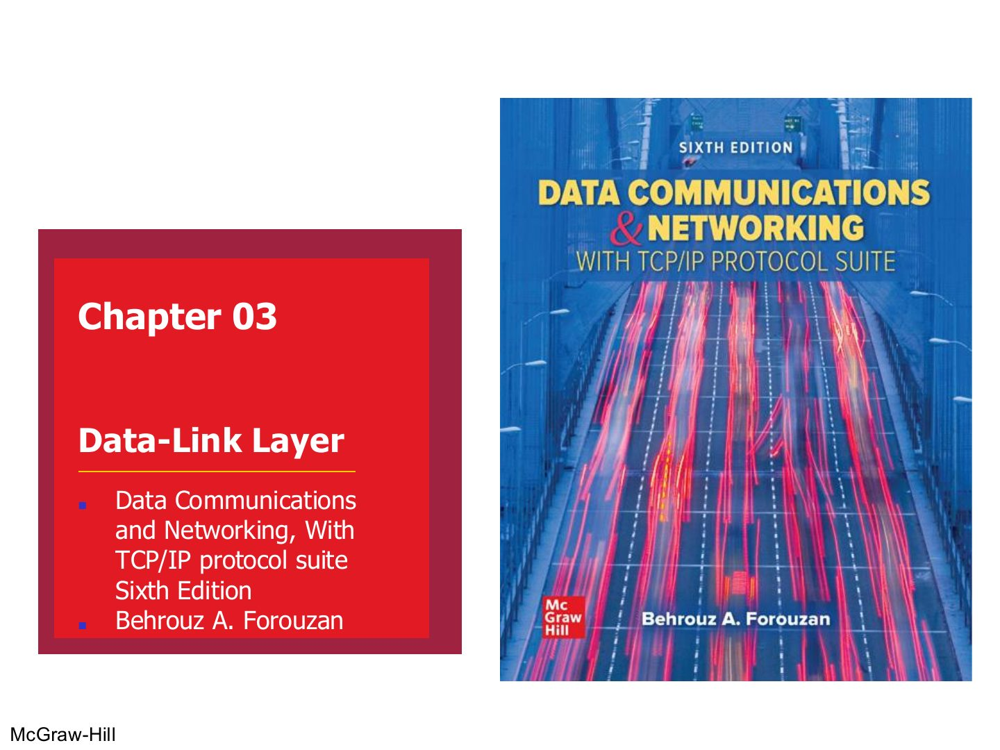
The deck follows the order of the problems the data link layer has to solve. First, what services it provides. Then framing: how the receiver knows where a frame starts and ends, and what to do when the data contains the frame marker (byte stuffing and bit stuffing). Then errors: what kinds happen (single-bit and burst), how to detect them (simple parity, two-dimensional parity, CRC, checksum), and how to correct them (retransmission or forward error correction).
Tutorial 4 is ten calculations from this deck: 2D parity, simple parity, checksum and CRC, each worked at the sender and then checked at the receiver. Every one of them is on the slides below with a full model answer. Do them by hand at least once: under exam pressure the usual mistakes are appending the wrong number of zeros in CRC and forgetting to wrap the carry in a checksum.
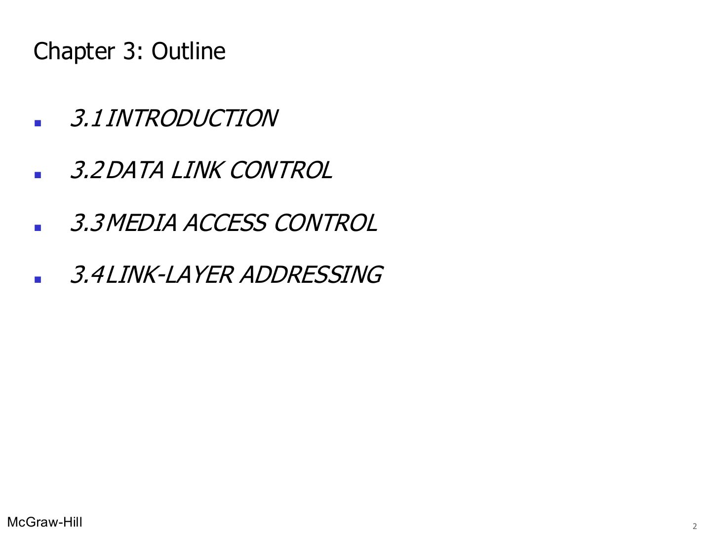
Chapter 3 has four sections. This part covers 3.1 introduction (the services) and 3.2 data link control, which is framing plus error control. Part 2 covers 3.3 media access control: how devices share one medium (ALOHA, CSMA/CD and so on). Section 3.4, link-layer addressing, is about MAC addresses and ARP.
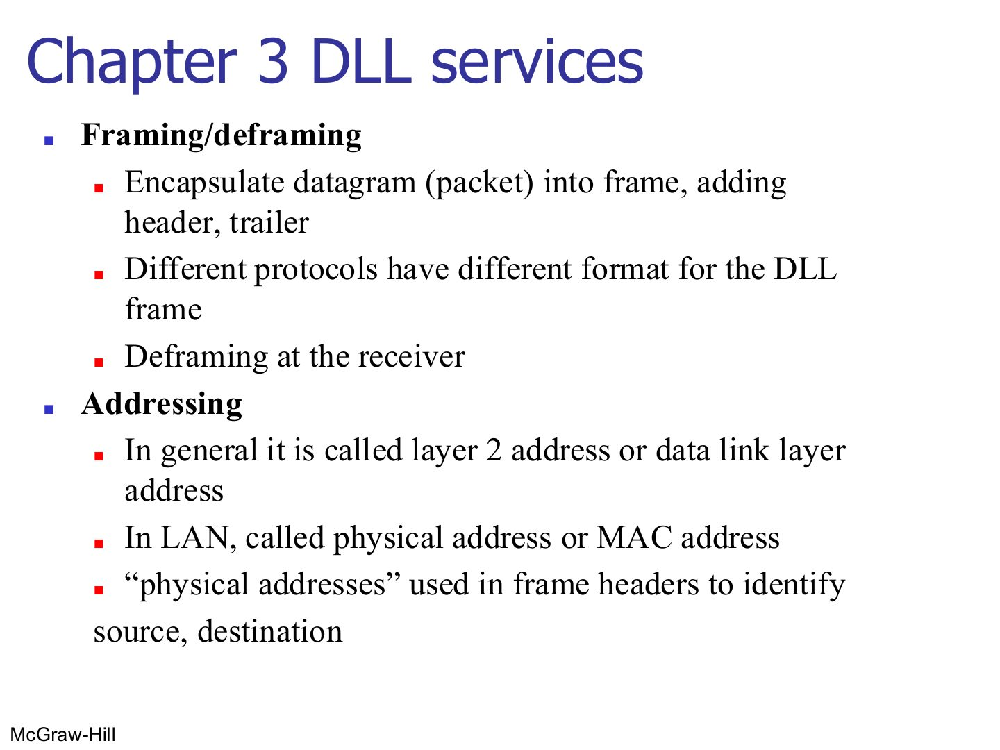
Framing means taking the network layer’s packet and wrapping it in a frame by adding a header (in front) and a trailer (at the end). Different protocols use different frame formats (Ethernet and Wi-Fi frames look different). The receiver does the reverse, deframing: it removes the header and trailer and passes the packet up.
Addressing: the frame header carries the source and destination layer-2 addresses. In general these are called data link layer addresses; on a LAN they are called physical addresses or MAC addresses. They identify which device on the link sent the frame and which device should receive it.
Seen again Ch 1 Part 2, slide 28: Data link layer overview
Wrapping a packet in a header and trailer at the data link layer is called:
On a LAN, the addresses in the frame header are called:
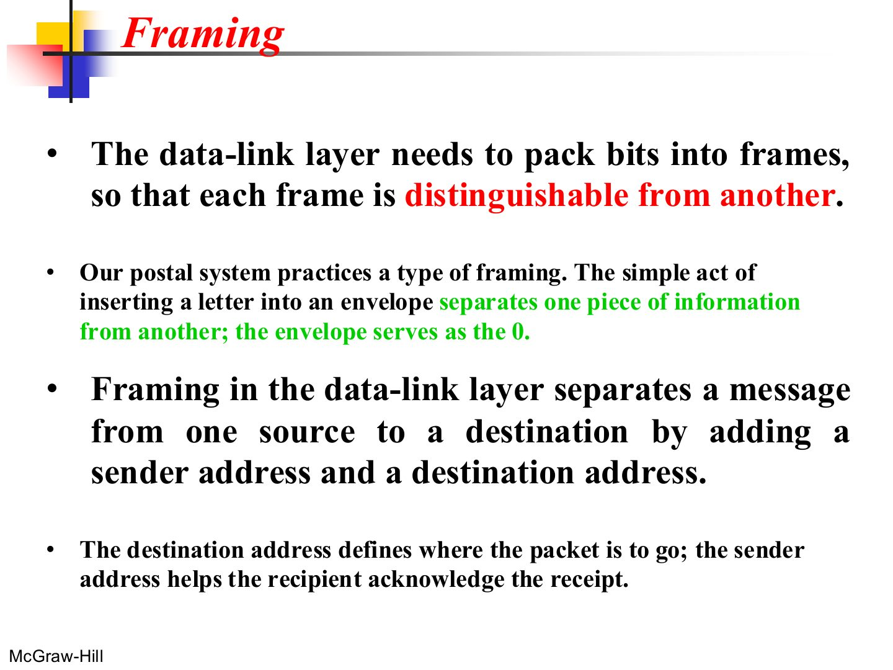
A physical layer only delivers a stream of bits with no breaks in it. Framing packs those bits into frames so each one is distinguishable from the next: the receiver can tell where one frame ends and the next begins. The slide compares it to post: putting a letter in an envelope separates one message from another, and the envelope is the delimiter.
Framing also adds the sender address and destination address, like the addresses on an envelope. The destination address says where the frame should go; the sender address lets the receiver acknowledge it (send a reply saying it arrived).
Why does the frame carry the sender’s address?
In the post office comparison, what plays the role of the frame delimiter?
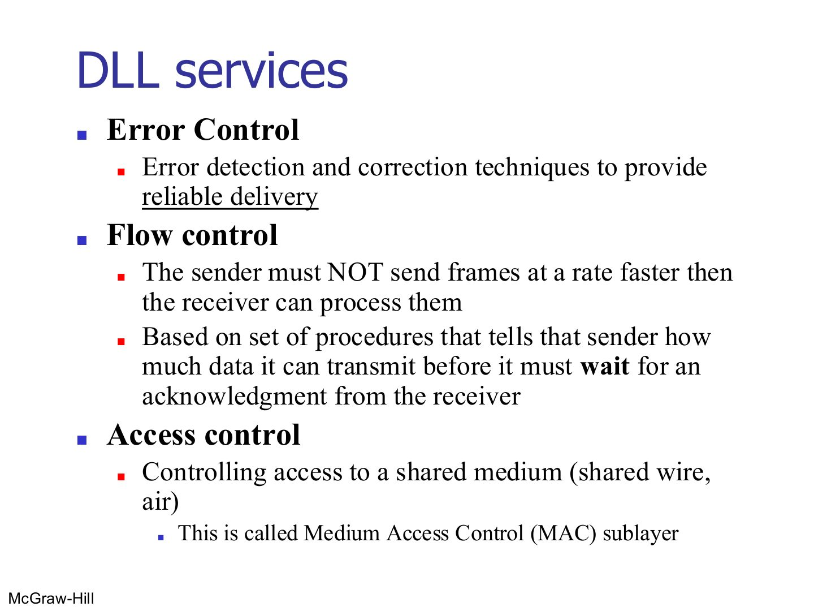
Error control: the data link layer uses error detection (noticing that bits were corrupted) and sometimes correction techniques so that delivery over the link is reliable. Most of this deck is about these techniques.
Flow control: the sender must not send frames faster than the receiver can process them, or the receiver’s buffer overflows and frames are lost. It works with a set of procedures that tell the sender how much data it may send before it must wait for an acknowledgment from the receiver. Don’t confuse it with congestion control (Chapter 9), which protects the network rather than the receiver.
Access control: when several devices share one medium (a shared cable or the air), something has to decide who may transmit when, or their signals collide. This job belongs to the Medium Access Control (MAC) sublayer, the lower half of the data link layer, covered in Part 2.
Trap Flow control protects the RECEIVER from being flooded; congestion control (Ch 9) protects the NETWORK.
Seen again Ch 3 Part 2, slide 2: Media access control
Seen again Ch 9, slide 6: Flow and error control at the transport layer
Making sure the sender does not send faster than the receiver can process is:
Controlling access to a shared medium is done by the:
In flow control, the sender may send only a certain amount of data before it must wait for an acknowledgment.
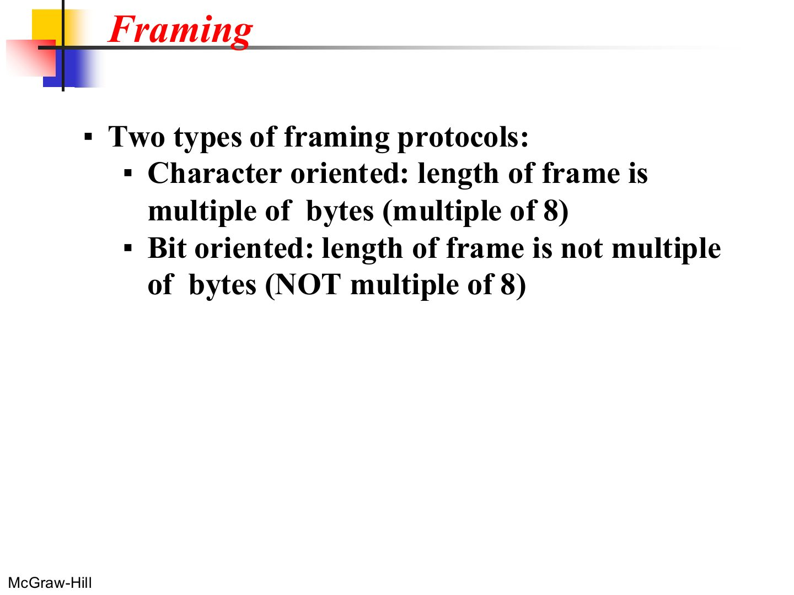
There are two kinds of framing protocol. In a character-oriented (byte-oriented) protocol, the data is a sequence of 8-bit characters, so the frame length is always a multiple of 8 bits: a whole number of bytes. In a bit-oriented protocol, the data is just a sequence of bits, so the frame length doesn’t have to be a multiple of 8. Bit-oriented framing can carry any kind of data (images, audio), not only text.
A framing protocol whose frame length need not be a multiple of 8 bits is:
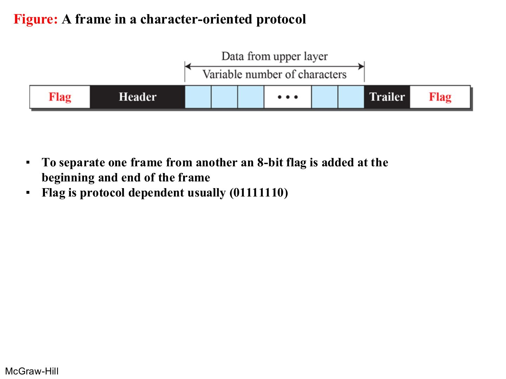
To separate frames, a character-oriented protocol puts an 8-bit flag at the beginning and end of each frame. The flag is a special pattern defined by the protocol (often 01111110). The receiver watches for it: everything between two flags is one frame (header, data characters, trailer).
In a character-oriented protocol, how are frames separated?
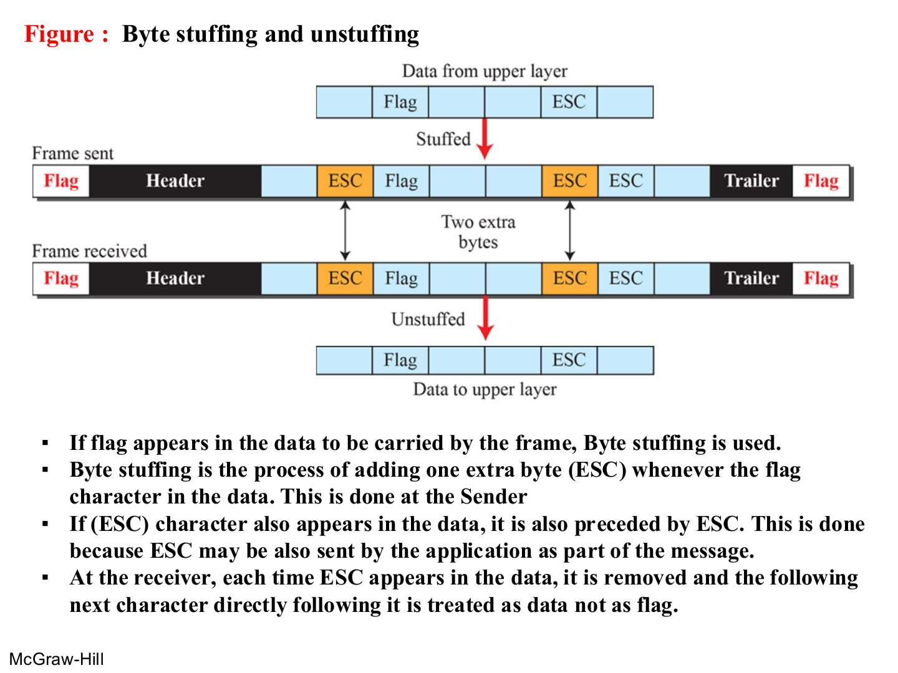
The problem: what if the flag pattern happens to appear inside the data? The receiver would think the frame had ended. The fix is byte stuffing: the sender inserts an extra byte, called ESC (escape), in front of any byte in the data that looks like the flag. When the receiver sees ESC, it knows the next byte is data, not a flag.
What if the data itself contains a byte that looks like ESC? Then the receiver would wrongly delete it. So the sender also puts an ESC in front of every ESC byte in the data. Rule: stuff an ESC before every flag byte and every ESC byte in the data. At the receiver (unstuffing), each time an ESC appears, it is removed and the byte right after it is treated as data, even if it looks like a flag or an ESC. Stuffing is done by the sender; unstuffing by the receiver.
Trap ESC itself must also be escaped, or the receiver would drop a real ESC byte from the data.
In byte stuffing, the sender adds an extra ESC byte:
Byte stuffing is done at the receiver.
Why must an ESC byte in the data also be escaped?
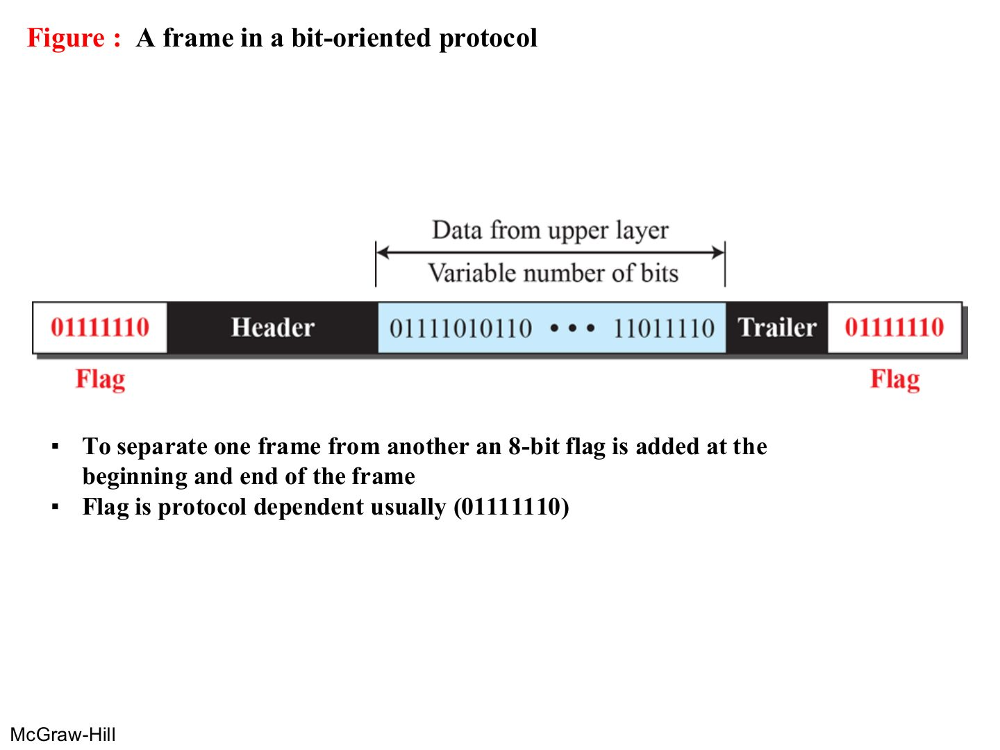
Bit-oriented frames also use the 8-bit flag 01111110 at the beginning and end. Because the data is a stream of bits rather than bytes, the flag can appear anywhere in it, even across byte boundaries, so a different fix is needed: bit stuffing.
The flag used in bit-oriented framing is:
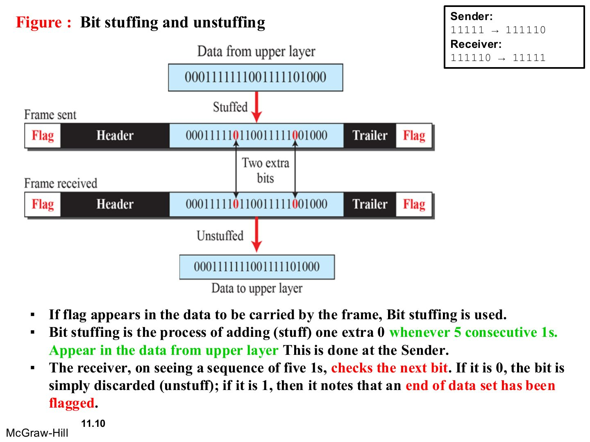
Bit stuffing: the flag has six 1s in a row (01111110). To make sure the data can never contain six 1s in a row, the sender adds an extra 0 after every five consecutive 1s in the data, whatever the next bit is. Example: 11111 becomes 111110. The figure: data 0001111111001111101000 becomes 000111110110011111001000, with a 0 after the first five 1s of the seven-1 run and after the five 1s of 11111. After a stuffed 0, start counting 1s again from zero.
The receiver, when it sees five 1s in a row, looks at the next bit. If it is 0, that 0 was stuffed, so it deletes it. If it is 1, the six 1s mean this is the flag, so the frame has ended. This is why the sender stuffs even when the sixth bit would have been 0: the receiver always deletes a 0 after five 1s, so the sender must always add one.
Memory trick Count to five 1s, then add a 0. Restart the count after the stuffed 0.
After bit stuffing, the data 0111111 becomes:
Bit stuffing inserts a 0 after how many consecutive 1s?
Stuff the bits 0001111111001111101000 for transmission with flag 01111110.
000111110110011111001000: a 0 goes in after the first five 1s of the 1111111 run, and after the five 1s of 11111.
The receiver sees five 1s followed by a 1. What does it conclude?
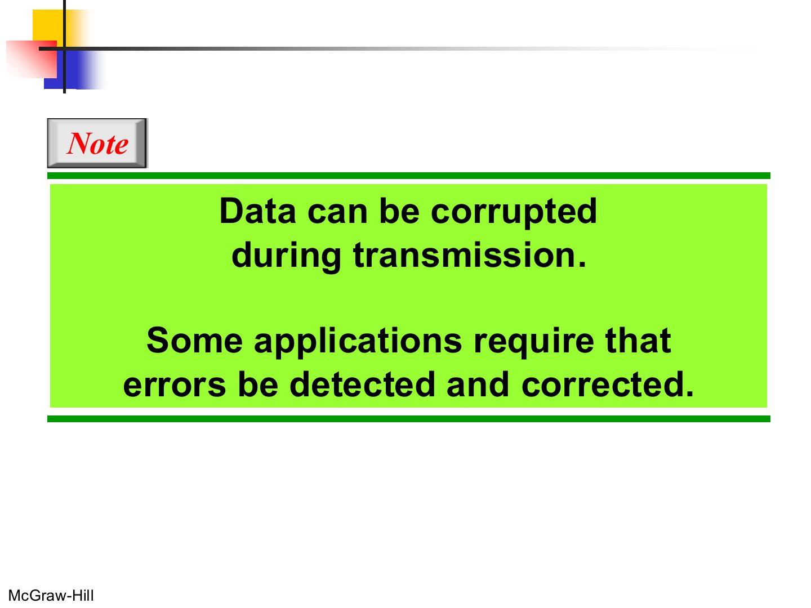
No medium is perfect, so bits will sometimes be corrupted during transmission (a 0 arrives as a 1, or the other way). Some applications can tolerate this (a pixel in a video), but many can’t (a bank transfer, a program file), so they need errors to be detected and sometimes corrected.
Some applications require errors to be both detected and corrected.
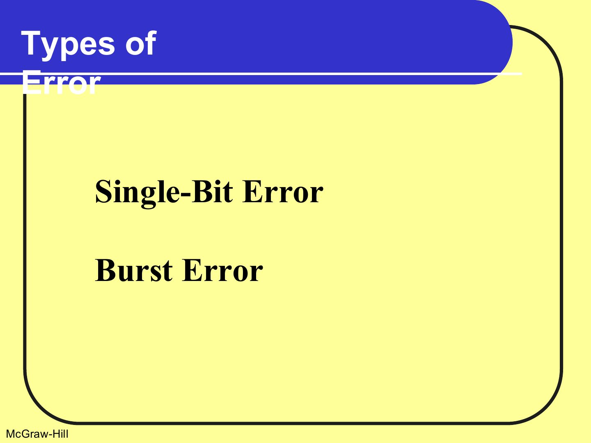
There are two types of error. A single-bit error changes exactly one bit. A burst error changes two or more bits. Burst errors are far more common in practice, because a burst of noise usually lasts longer than one bit.
The two types of error are:
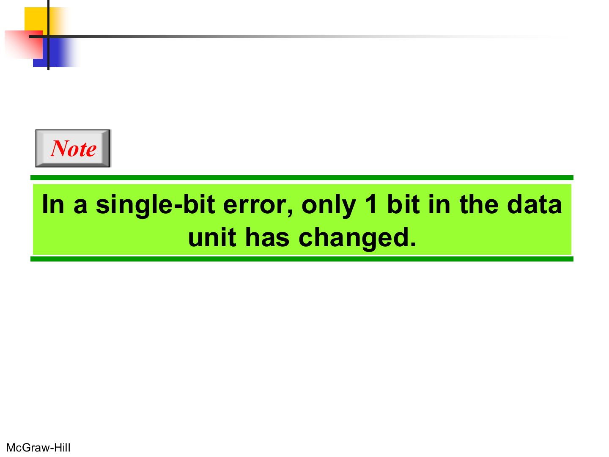
In a single-bit error, only one bit of the data unit (byte, frame, packet) has changed. Everything else is intact. It is the easiest kind of error to detect and to correct.
A single-bit error means:
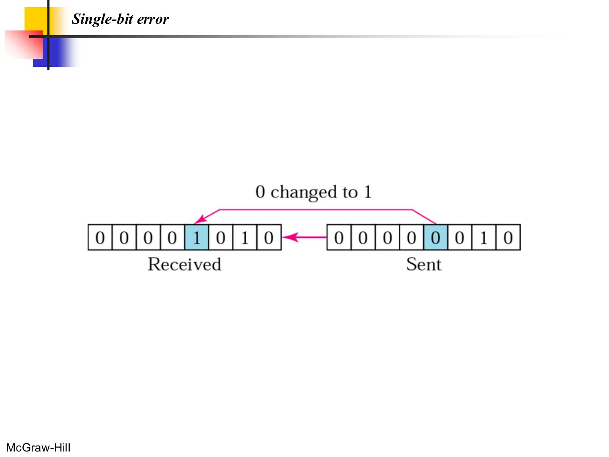
The figure shows a single-bit error: 00000010 is sent and 00001010 is received. Only the fifth bit from the left changed (0 to 1). One flipped bit can completely change the meaning: here the number 2 became 10.
00000010 is sent and 00001010 is received. This is:
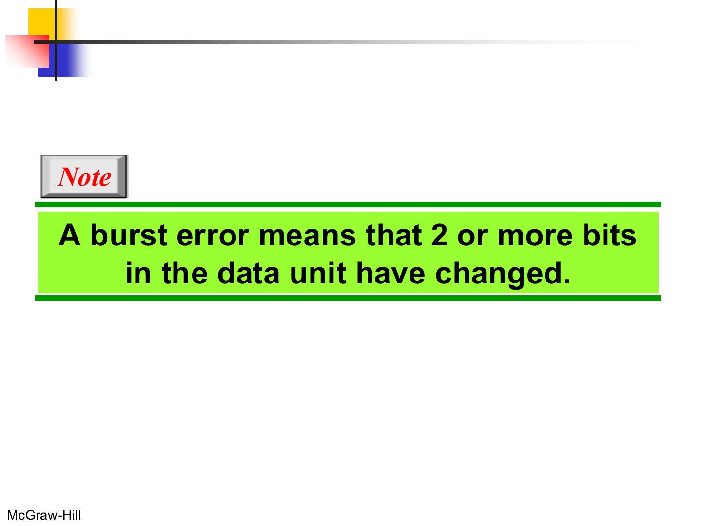
A burst error means two or more bits in the data unit have changed. They don’t have to be next to each other (see the next slide).
A burst error means:
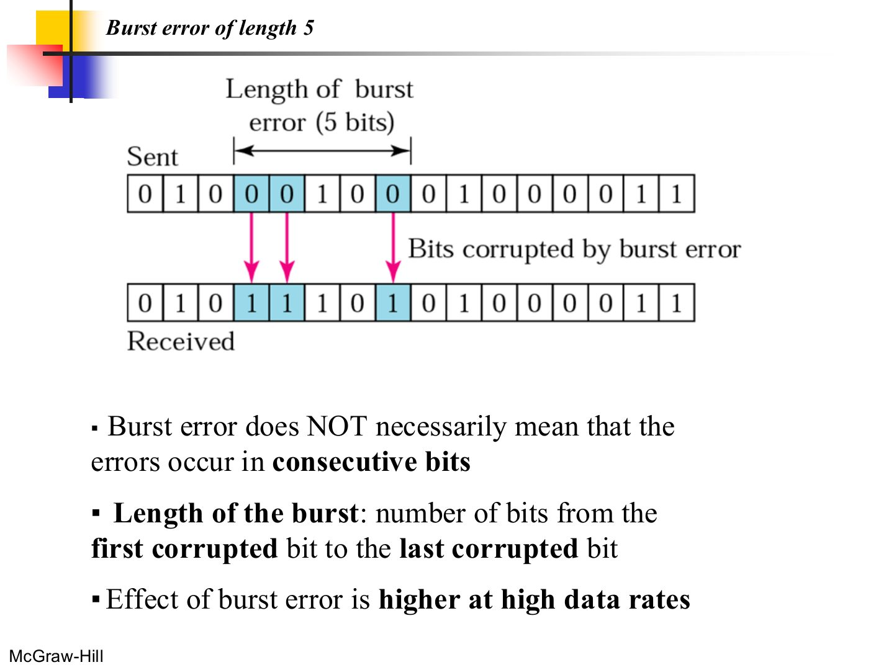
A burst error does not require the corrupted bits to be consecutive. Some bits inside the burst may arrive correctly.
The length of a burst is counted from the first corrupted bit to the last corrupted bit, including any correct bits between them. So a burst of length 5 may have only 3 bits actually wrong. If bits 3 and 9 are corrupted and nothing in between, the length is 9 - 3 + 1 = 7. Burst errors do more damage at high data rates: a burst of noise lasts a fixed time, and the faster the link, the more bits pass during that time (the next slide calculates it).
Trap A burst of length 5 may corrupt only 3 bits: the length counts from first to last bad bit.
In a burst error, the corrupted bits must be consecutive.
Bits 3 and 9 of a frame are corrupted and nothing in between. The burst length is:
The effect of a burst error is higher at high data rates.
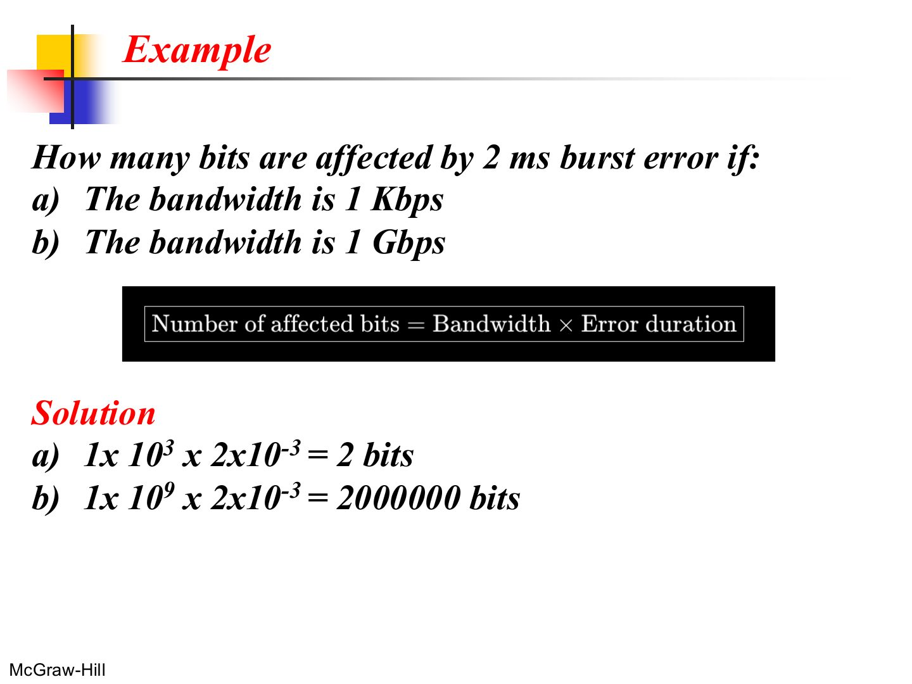
Number of affected bits = bandwidth × duration of the noise. The same 2 ms burst hits 2 bits on a 1 Kbps link (10³ × 2 × 10⁻³) but 2,000,000 bits on a 1 Gbps link (10⁹ × 2 × 10⁻³). The noise is the same; the faster link simply carries a million times more bits in that time. That is the calculation behind “burst errors are worse at high data rates”.
A 5 ms burst of noise hits a 100 Mbps link. How many bits are affected?
A 2 ms burst on a 1 Kbps link affects how many bits?
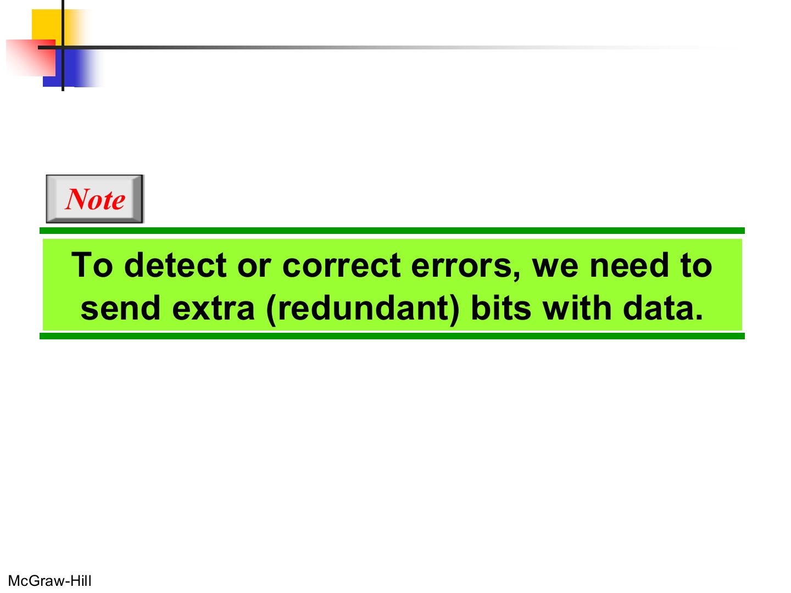
The basic idea of every error-detection method: send extra (redundant) bits along with the data. The redundant bits are calculated from the data, so the receiver can recalculate them and compare. If they don’t match, something was corrupted. The more redundancy you send, the more errors you can catch, but the more bandwidth you use.
Every error-detection method relies on:
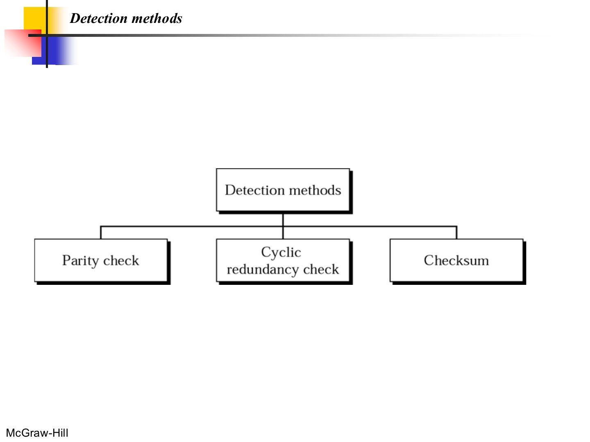
The slides cover three detection methods: parity check (simple and two-dimensional), cyclic redundancy check (CRC) and checksum. Byte stuffing and bit stuffing are framing techniques, not error detection, which is a common MCQ trap.
Which is NOT an error-detection method?
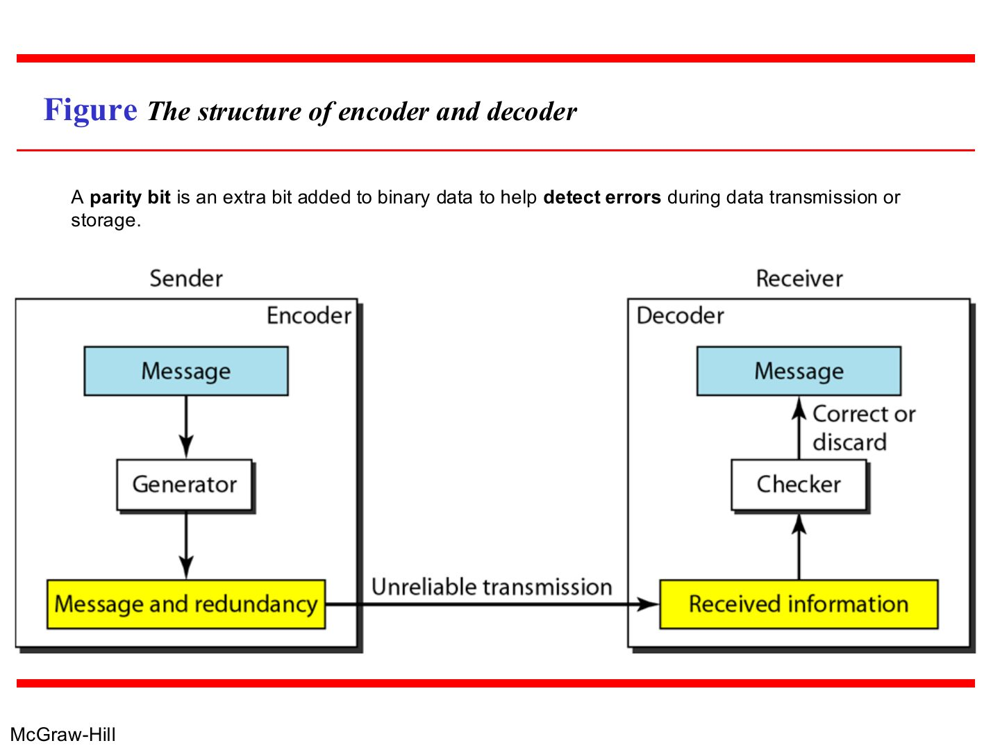
A parity bit is an extra bit added to binary data so errors can be detected. The general structure: at the sender, a generator takes the message and adds redundancy to it, producing a codeword. At the receiver, a checker recalculates the redundancy from what arrived and decides whether to accept the data or discard it.
At the receiver, which part decides whether to accept or discard the data?
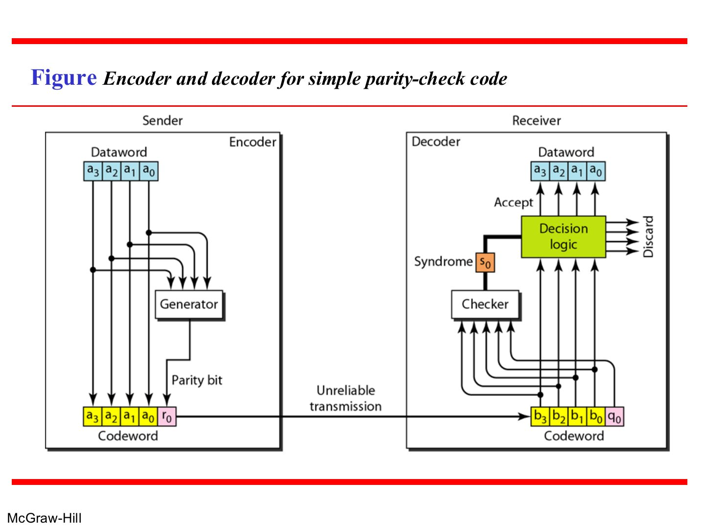
For simple parity: the 4-bit dataword a3 a2 a1 a0 goes into the generator, which calculates a parity bit r0 and appends it, making a 5-bit codeword. The receiver calculates a syndrome from the five bits it received: if the syndrome is 0 (the parity still checks out), it accepts the dataword; if it is 1, it discards it.
In the simple parity decoder, a syndrome of 1 means:
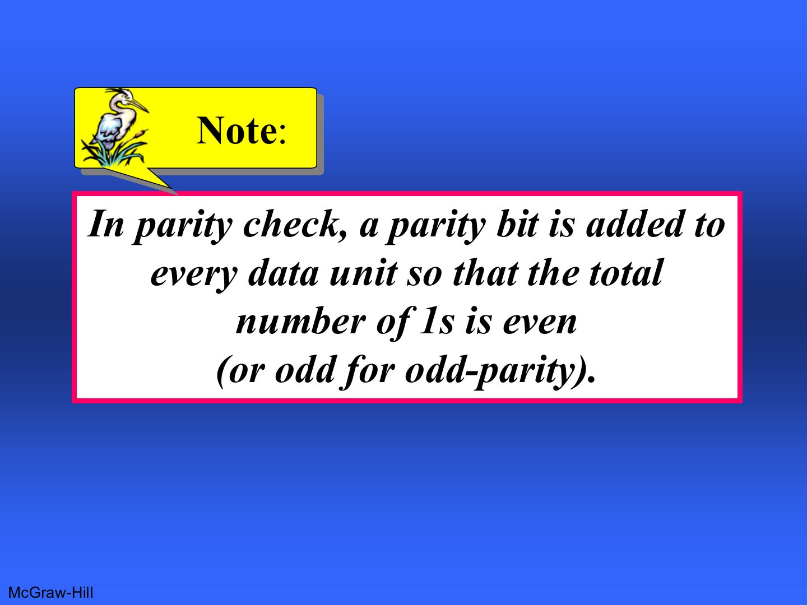
With even parity, the parity bit is chosen so that the total number of 1s in the codeword (data plus parity bit) is even. With odd parity, the total is made odd. Quick rule for even parity: count the 1s in the data; if the count is odd, the parity bit is 1; if it is even, the parity bit is 0.
Memory trick Even parity bit = 1 if the data has an ODD number of 1s (so the total becomes even).
With even parity, the data 1101001 gets which parity bit?
With odd parity, the data 1100 gets which parity bit?
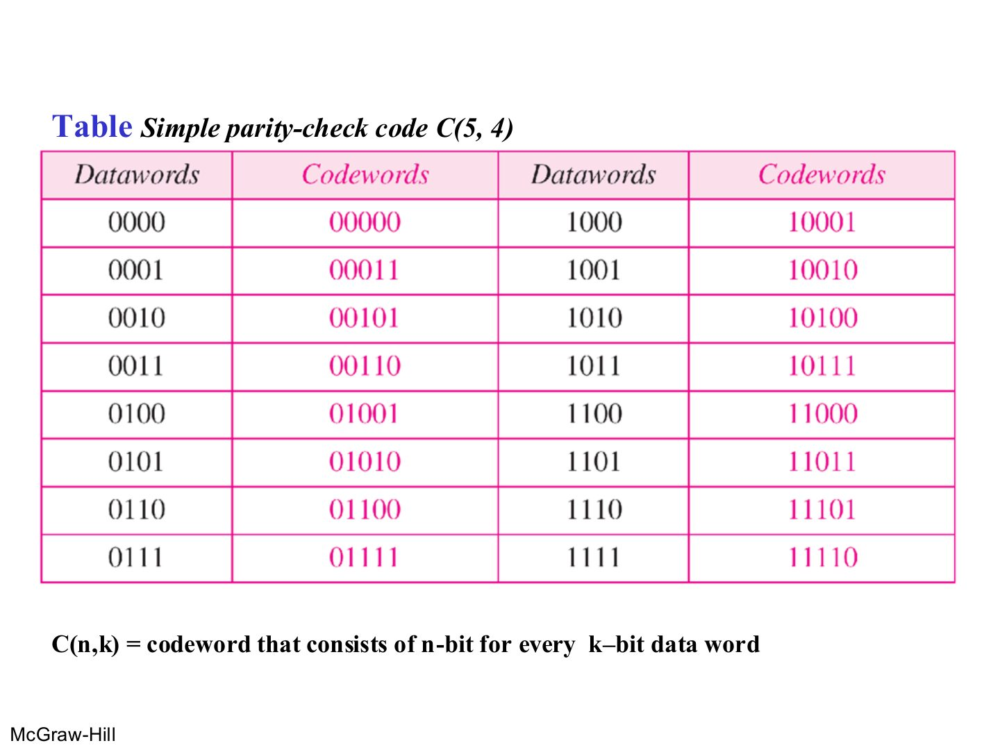
C(n, k) names a code in which every k-bit dataword becomes an n-bit codeword. C(5, 4) means 4 data bits become 5 bits: one parity bit added. The table lists all 16 four-bit datawords with their even-parity codewords; for example 1011 has three 1s, so its parity bit is 1 and the codeword is 10111.
With even parity, the dataword 1011 becomes:
What does C(5, 4) mean?
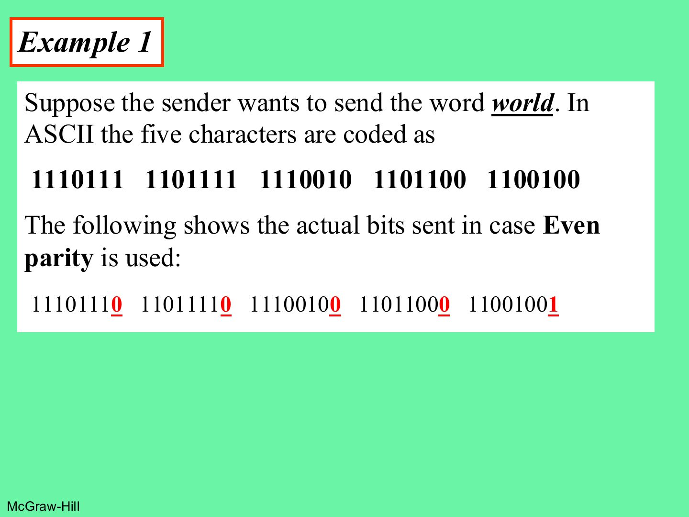
The word “world” is sent in 7-bit ASCII with even parity. For each character, count the 1s and add a parity bit that makes the count even: w = 1110111 has six 1s, so parity 0; o = 1101111 has six, parity 0; r = 1110010 has four, parity 0; l = 1101100 has four, parity 0; d = 1100100 has three, so parity 1. Tutorial 4, Question 2 is the same exercise: 1010101 becomes 10101010, 1111000 becomes 11110000, 0000000 becomes 00000000.
Q2 · even parity on 7-bit datawords
A sender uses even parity for each 7-bit dataword to create an 8-bit codeword. Encode the datawords 1010101, 1111000 and 0000000.
1010101 has four 1s → 10101010. 1111000 has four 1s → 11110000. 0000000 has no 1s → 00000000.
With even parity, the 7-bit dataword 1111000 becomes:
In the “world” example, why does d (1100100) get parity bit 1?
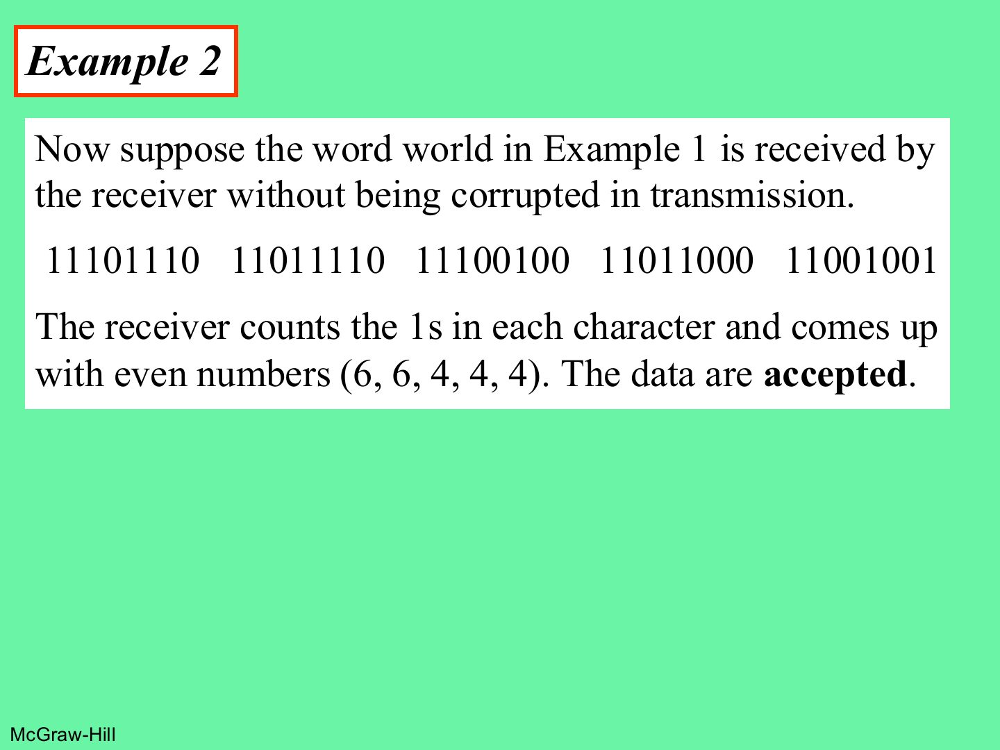
The receiver counts the 1s in each 8-bit character it received: 6, 6, 4, 4, 4. All are even, so every character passes the parity check and the data is accepted.
The receiver counts 6, 6, 4, 4, 4 ones in the five characters. With even parity it:
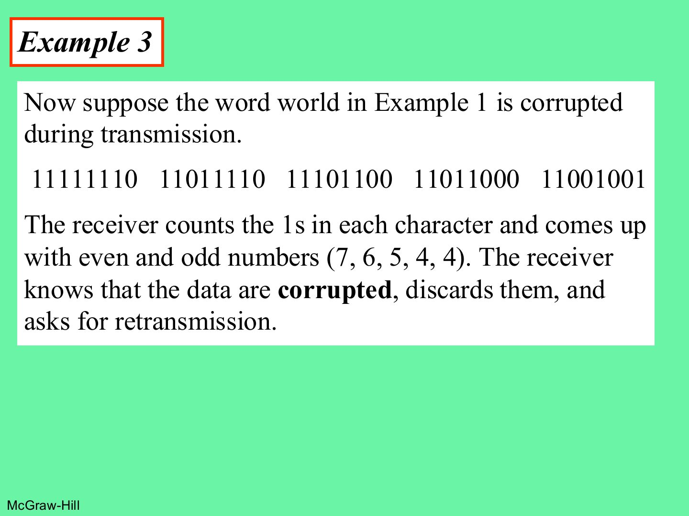
This time two characters were corrupted. The counts are 7, 6, 5, 4, 4: the first and third are odd, so the receiver knows those characters are corrupted. Simple parity can’t tell which bit is wrong, so the receiver can’t fix it: it discards the data and asks for retransmission. Tutorial 4, Question 2b is the same idea: 10101010 has four 1s (valid), 11110001 has five (invalid), 00000001 has one (invalid), and none can be corrected.
Q2b · which received codewords are valid
With even parity, the receiver gets the codewords 10101010, 11110001 and 00000001. Which are valid and which are invalid? If invalid, can the receiver correct the error?
10101010 has four 1s → valid. 11110001 has five 1s → invalid. 00000001 has one 1 → invalid. Simple parity only shows that something is wrong, not which bit, so the receiver can’t correct them: it discards them and asks for retransmission.
Why can’t simple parity correct an error it detects?
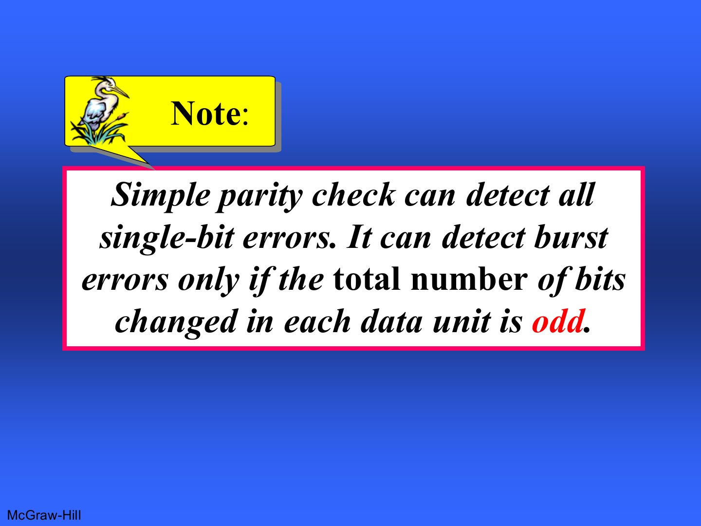
Simple parity detects every single-bit error, because one flipped bit always changes the count from even to odd. It detects a burst error only if an odd number of bits changed. If two (or any even number of) bits flip, the count stays even and the error goes unnoticed. That is its big weakness, and why stronger methods exist.
Trap Two flipped bits keep the parity the same, so simple parity misses every even number of errors.
Simple parity check can detect all burst errors.
Simple even parity will NOT detect an error when:
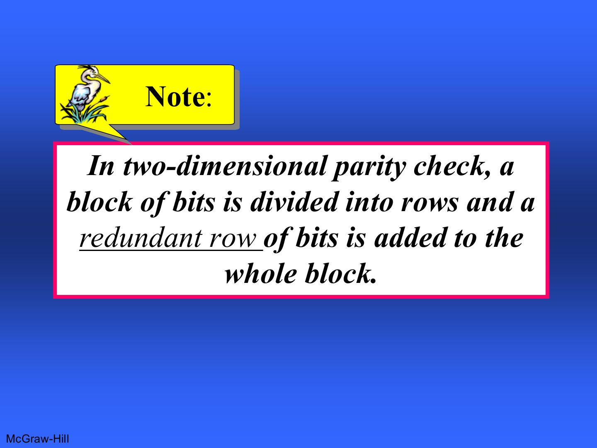
Two-dimensional parity arranges the block of data in a table of rows. Each row gets its own parity bit (a parity column on the right), and a whole redundant row is added at the bottom: the parity bit of each column. The whole table, including the parity row, is sent.
In two-dimensional parity, what is added to the block?
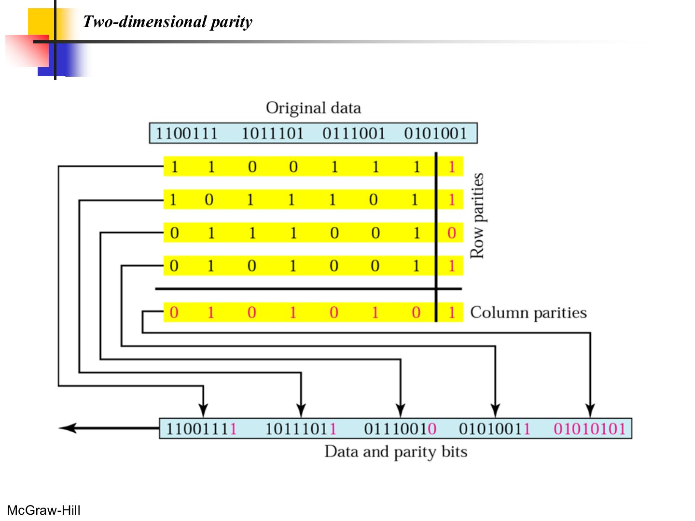
How to compute it, using Tutorial 4, Question 1 (datawords 1010, 0111, 1100, 1001, even parity). Row parities: 1010 has two 1s → 0; 0111 has three → 1; 1100 → 0; 1001 → 0. Then take each column, including the parity column, and add its parity: the bottom row is 1000|1. Block sent: 1010|0, 0111|1, 1100|0, 1001|0, 1000|1. At the receiver, recompute every row and column: a single bad bit makes exactly one row and one column fail, and the bit where they cross is the wrong one, so it can be flipped back.
Q1 · 2D parity for 1010, 0111, 1100, 1001
Q8 · 2D parity with a burst error
Four datawords 1010, 0111, 1100, 1001 are sent with two-dimensional even parity. (a) Calculate the parity and show the complete transmitted block. (b) The receiver gets 1010|0, 0111|1, 1100|0, 1001|1 and parity row 1011|0. Check it.
(a) Row parities 0, 1, 0, 0; column parity row 1000|1. Block: 1010|0, 0111|1, 1100|0, 1001|0, 1000|1. (b) Recomputing, row 4 and the parity row fail, and columns 3 and 4 fail. More than one bit has changed (row 4’s parity bit and three bits of the parity row), so an error is detected but it can’t be fixed by finding one crossing point: the block is rejected.
Data 111, 000, 101 is sent with two-dimensional even parity. (a) Show the full parity block. (b) The receiver gets 111|1, 000|0, 101|0 and parity row 010|0. Are there errors?
(a) Row parities 1, 0, 0; column parity row 010|1. Block: 111|1, 000|0, 101|0, 010|1. (b) Only the parity row fails among the rows, and only the parity column fails among the columns. They cross at the bottom-right corner bit: it was sent as 1 and received as 0. That single error is detected and can be corrected; the data bits themselves are fine.
Two-dimensional even parity is computed for rows 11 and 01. What is the bottom (column parity) row, including its corner bit?
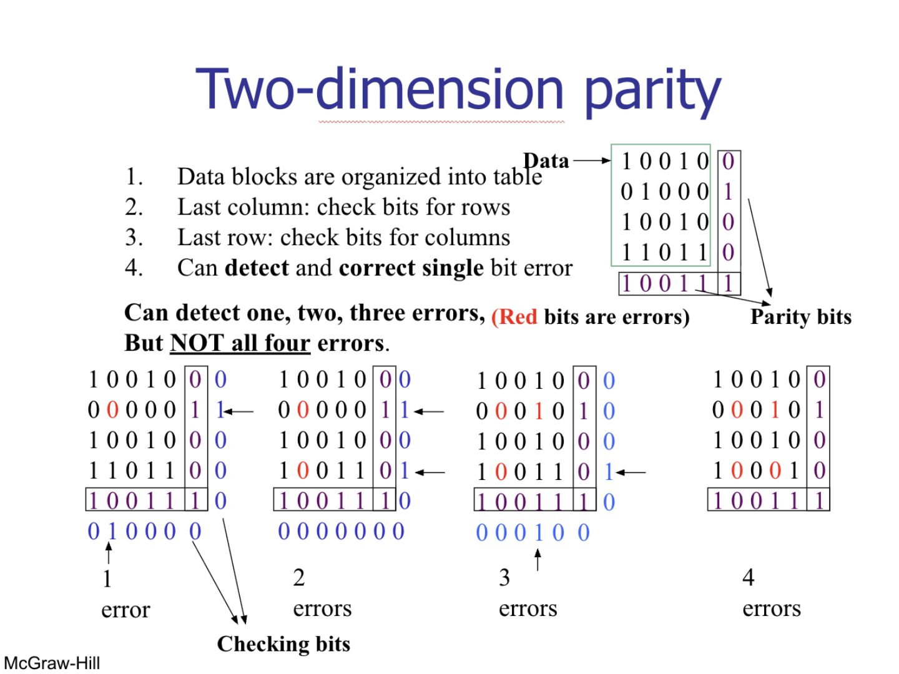
Because a single error shows up in one row and one column, 2D parity can detect and correct a single-bit error: the bad bit is at the crossing.
It can detect two or three errors (some row or column will fail), but it cannot detect all four-bit errors: if the four errors sit at the corners of a rectangle, every row and every column has exactly two flipped bits, so all parities still check out and the error slips through.
Two-dimensional parity can correct a single-bit error.
Which error pattern can two-dimensional parity miss?
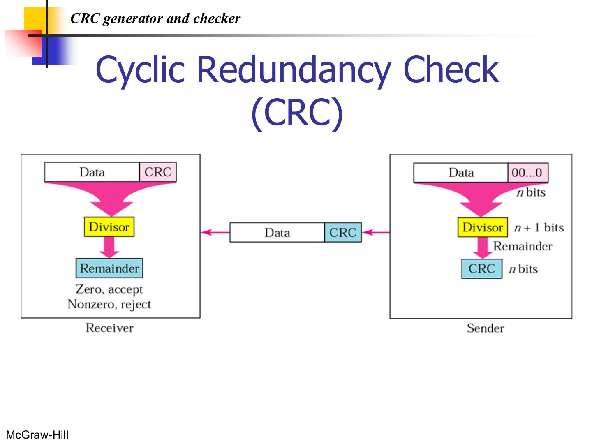
CRC at the sender: if the divisor (generator) has n+1 bits, append n zeros to the dataword. Divide the result by the divisor using XOR (binary division without carries). The remainder (n bits) is the CRC. Replace the appended zeros with it and send dataword + CRC.
CRC at the receiver: divide the whole received codeword (data + CRC) by the same divisor. If the remainder (the syndrome) is all 0s, no error is detected and the data is accepted; if it is anything else, the data is rejected.
With a 5-bit generator, how many zeros are appended to the dataword?
The receiver divides data + CRC and gets remainder 000. It:
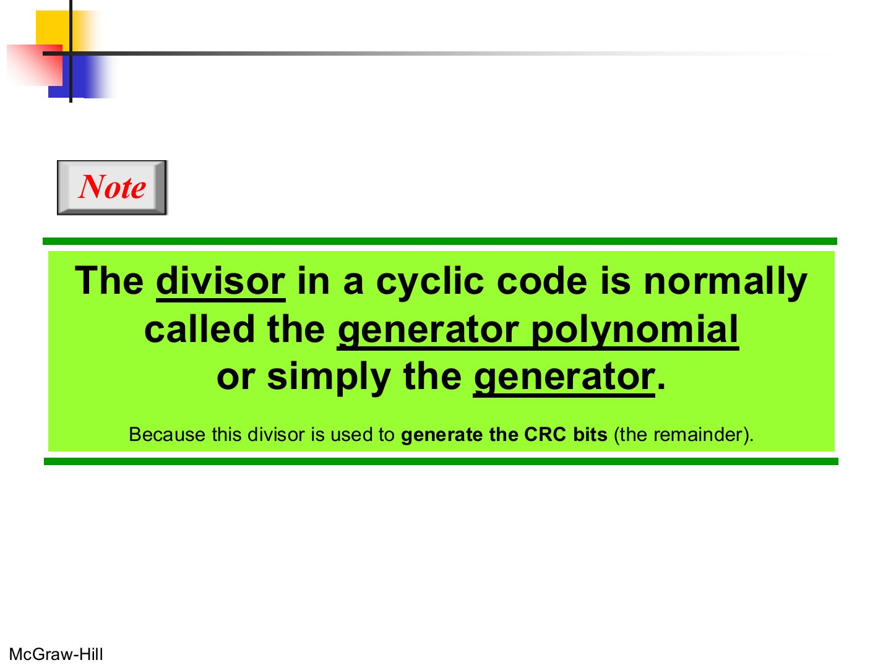
In CRC, the divisor is called the generator polynomial, or just the generator, because it is the thing that generates the CRC bits (the remainder). Sender and receiver must use the same generator.
Why is the CRC divisor called the generator?
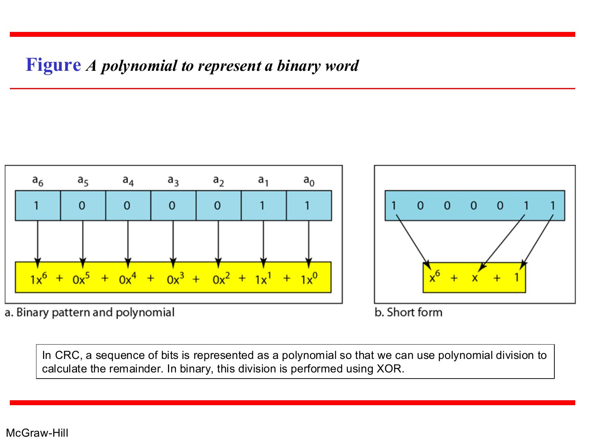
CRC writes a bit string as a polynomial: each 1 bit becomes a power of x, where the power is the bit’s position counting from 0 at the right. 1000011 has 1s at positions 6, 1 and 0, so it is x⁶ + x¹ + x⁰, written x⁶ + x + 1. Going the other way: x³ + x + 1 has powers 3, 1 and 0, so the bits are 1011 (positions 3 2 1 0 = 1 0 1 1). Polynomial division is done in binary with XOR.
Binary division here never borrows or carries: each step is just XOR, bit by bit. That is what makes CRC so fast in hardware.
Memory trick Polynomial → bits: write a 1 for every power present, from the highest down to x⁰. x³ + x + 1 = 1011.
The generator x³ + x + 1 in binary is:
1000011 as a polynomial is:
In CRC division, subtraction is done with:
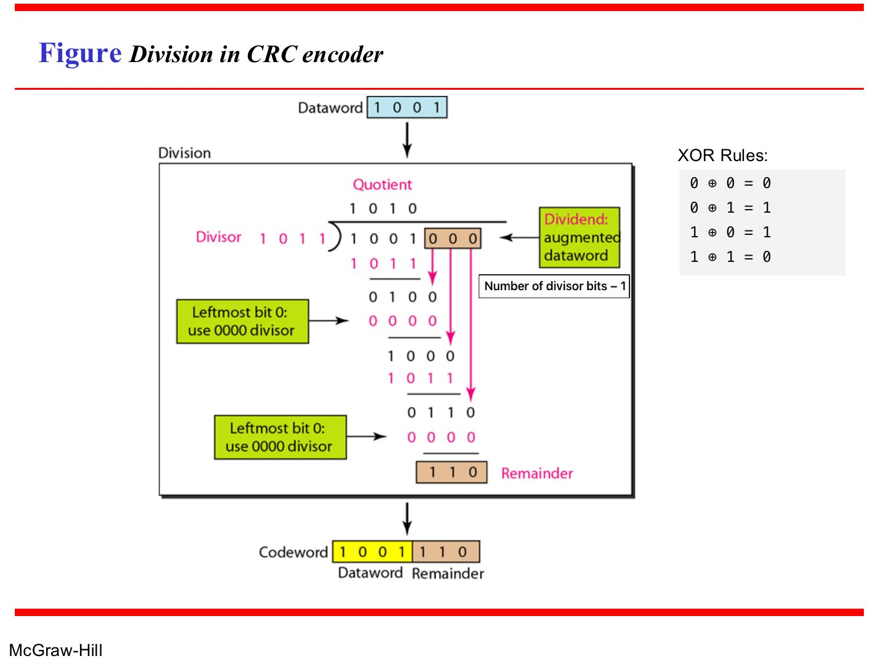
The worked division: dataword 1001, divisor 1011 (4 bits, so append 3 zeros: 1001000). Step by step: 1001 XOR 1011 = 0010; bring bits down, and whenever the leading bit of the current value is 1, XOR with 1011; whenever it is 0, XOR with 0000 (just shift). The last 3 bits left are the remainder 110, so the codeword is 1001110. XOR rules: 0⊕0 = 0, 0⊕1 = 1, 1⊕0 = 1, 1⊕1 = 0 (same bits give 0, different bits give 1).
Tutorial 4 has three of these. Q5: data 11010011, generator 1011 → append 000 → remainder 011 → send 11010011011. Q7: data 101110, generator x³ + x + 1 = 1011 → remainder 110 → send 101110110. Q10b: data 1101, generator 1011 → remainder 001 → send 1101001. The number of zeros to append is always the generator length minus 1.
Q5 · CRC of 11010011 with 1011
Q7 · CRC of 101110 with x³ + x + 1
A sender uses CRC with generator 1011. Calculate the CRC for dataword 11010011 and give the transmitted codeword.
Append 3 zeros: 11010011000. Dividing by 1011 with XOR leaves remainder 011. Transmitted codeword: 11010011011.
A sender wants to send data 101110 using the generator x³ + x + 1. Calculate the CRC and show the transmitted frame.
x³ + x + 1 = 1011. Append 3 zeros: 101110000. Dividing by 1011 leaves remainder 110. Transmitted frame: 101110110.
With generator 1011, the CRC for dataword 1101 is:
Dataword 1001, generator 1011. The codeword sent is:
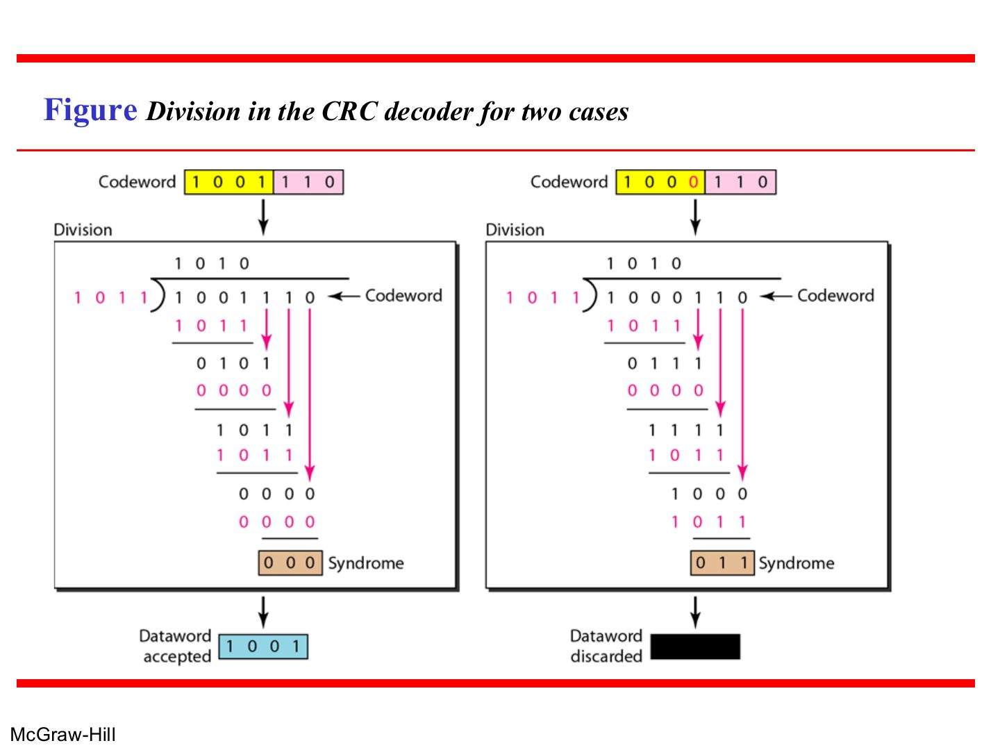
The receiver divides the whole codeword. 1001110 ÷ 1011 leaves syndrome 000: accepted. If one bit was flipped and 1000110 arrived, the division leaves 011: not zero, so discarded. Tutorial 4 checks: Q5b, 11010011101 ÷ 1011 leaves 110, so it is rejected. Q7b, 101110101 leaves 011, rejected; Q7c, 101110100 leaves 010, rejected. Q6, generator 1101: 10101010111 leaves 001 and 10101010101 leaves 011, so both are flagged. Note that the tutorial’s “transmitted” codeword 10101010101 isn’t actually a valid CRC codeword for 1101 (the correct one for data 10101010 is 10101010110), which is why even the unchanged copy gives a nonzero remainder.
Q5b · is 11010011101 accepted
Q7b–c · checking received frames
Generator 1011. The receiver gets 11010011101. Perform the division and decide whether the frame is accepted.
Dividing 11010011101 by 1011 leaves remainder 110, which is not zero, so the frame is rejected (the correct codeword was 11010011011).
Generator x³ + x + 1. The receiver gets 101110101; what happens? And if it gets 101110100?
101110101 ÷ 1011 leaves 011 → rejected. 101110100 ÷ 1011 leaves 010 → rejected. Both differ from the correct frame 101110110.
A sender transmits codeword 10101010101 using generator 1101. (a) The receiver gets 10101010111: is an error detected? (b) Show the result if it gets 10101010101.
(a) 10101010111 ÷ 1101 leaves 001, so an error is detected. (b) 10101010101 ÷ 1101 leaves 011, also nonzero. That happens because 10101010101 isn’t a valid codeword for 1101: the correct CRC for data 10101010 is 110, giving 10101010110, which would leave 000.
Generator x³ + x + 1: the received frame 101110101 is accepted.
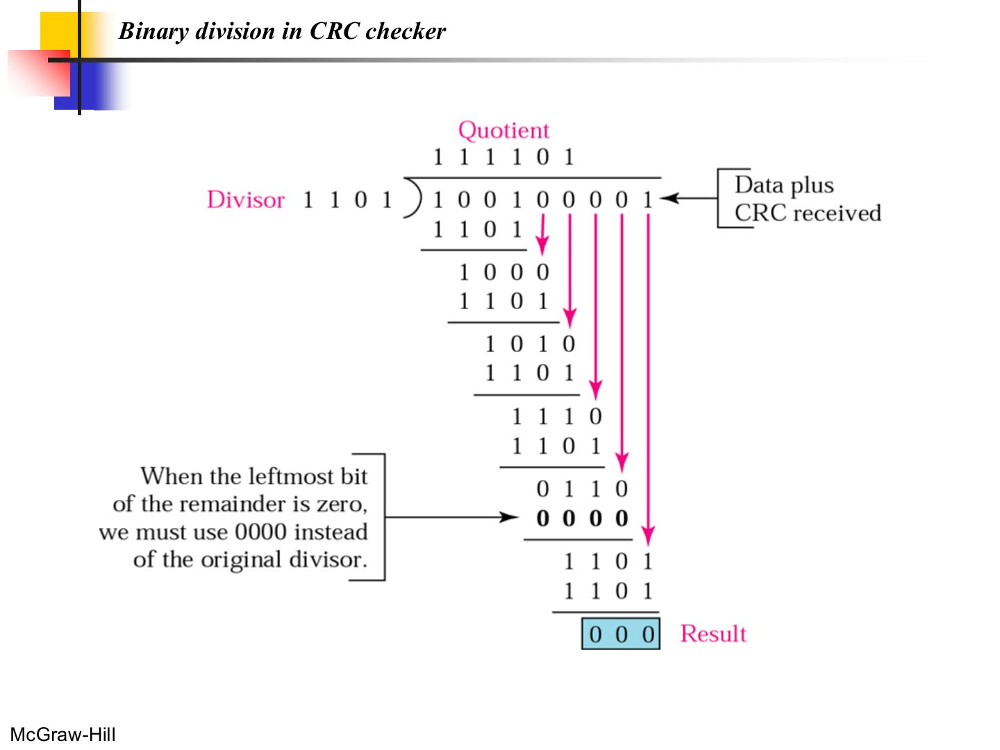
Another check: the received data + CRC 100100001 divided by 1101 leaves remainder 000, so no error is detected and the data is accepted. If the remainder is zero, the receiver keeps the data and removes the CRC bits.
Data + CRC 100100001 divided by 1101 leaves 000. The receiver:
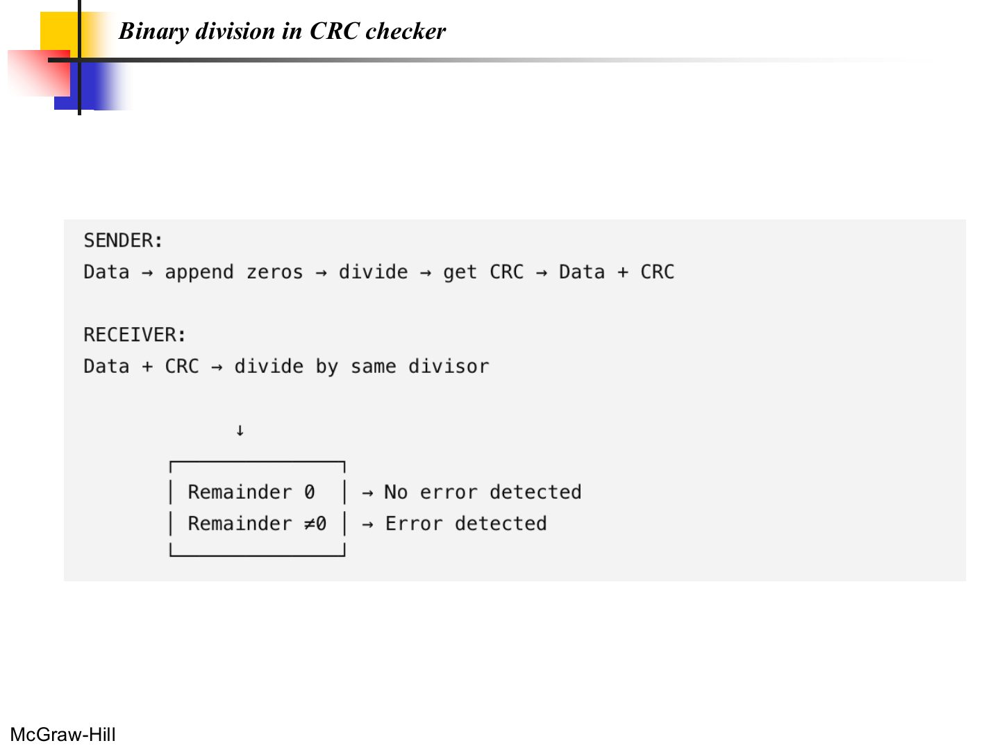
Summary of the procedure. Sender: take the data, append zeros (generator length - 1 of them), divide by the generator, take the remainder as the CRC, and send data + CRC. Receiver: divide data + CRC by the same generator; remainder 0 means no error detected, remainder not 0 means an error. The common mistake is appending as many zeros as the generator has bits: a 4-bit generator such as 1011 means 3 zeros and a 3-bit CRC.
Trap Generator 1011 has 4 bits → append 3 zeros and the CRC is 3 bits.
Generator 1011. How long is the CRC?
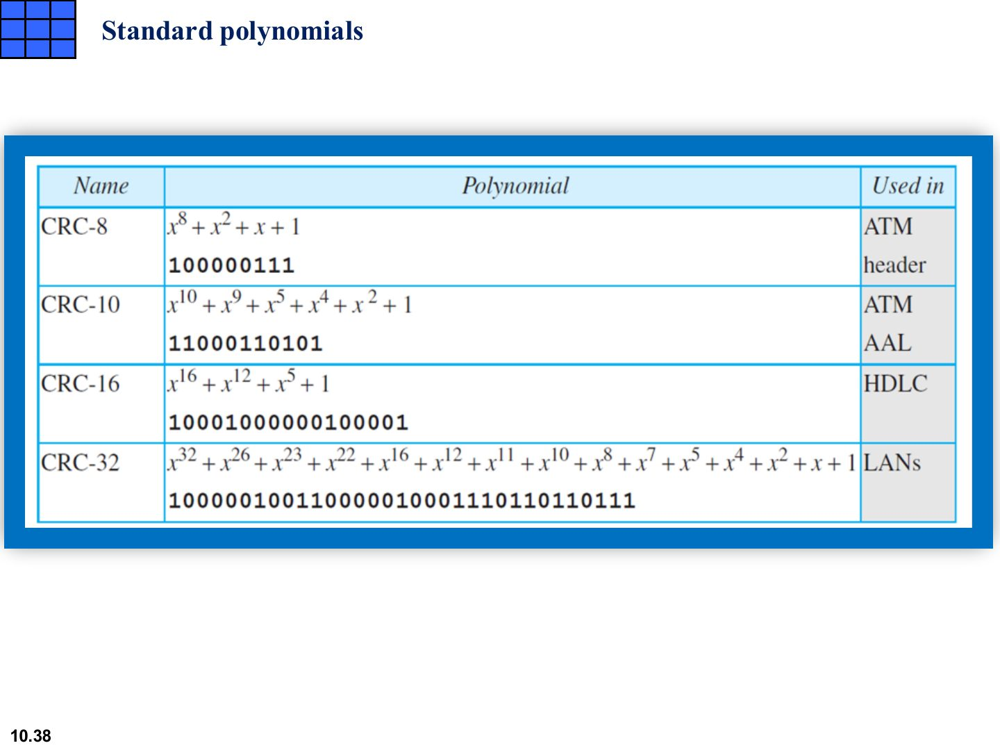
Standard generators have names by their degree: CRC-8 (ATM cell headers), CRC-10 (ATM AAL), CRC-16 (HDLC) and CRC-32 (LANs). CRC-32 is the one in the Ethernet frame’s 4-byte FCS field (Chapter 4).
Seen again Ch 4, slide 4: The Ethernet frame’s CRC field
Which standard CRC is used in LANs?
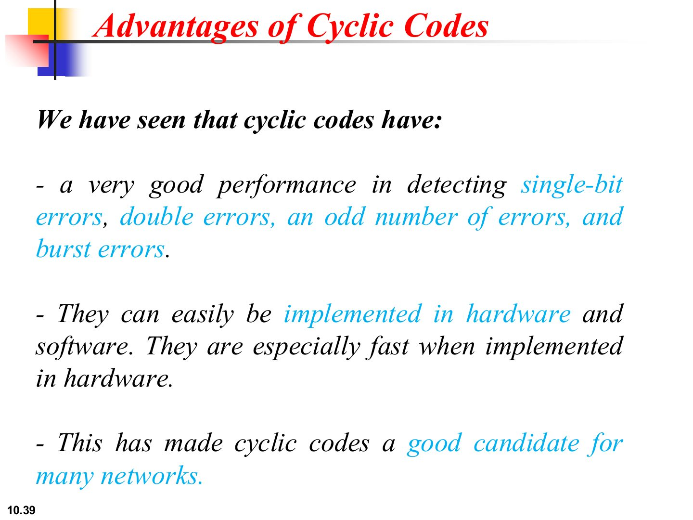
Why CRC (a cyclic code) is so widely used: it is very good at detecting single-bit errors, double errors, any odd number of errors, and burst errors, which covers the errors that actually happen on real links. It is also easy to implement in hardware (a few shift registers and XOR gates), where it is very fast. That combination makes it the standard choice for networks.
Which is NOT an advantage of cyclic codes listed on the slide?
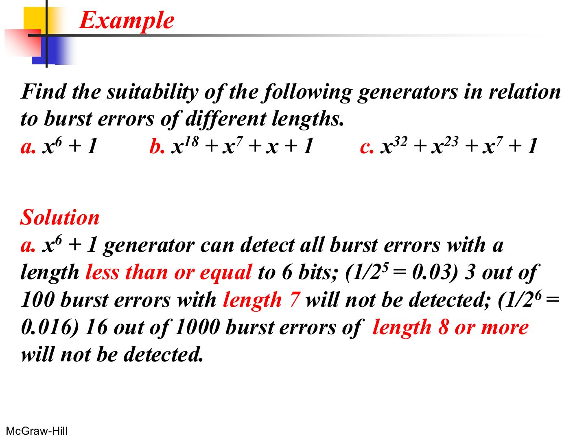
How long a burst a generator can catch depends on its degree r (the highest power). A generator of degree r detects all burst errors of length ≤ r. For a burst of length r + 1, a fraction 1/2^(r-1) slips through undetected; for bursts longer than r + 1, a fraction 1/2^r slips through. Example a: x⁶ + 1 has degree 6, so it catches every burst up to 6 bits; for length 7, 1/2⁵ ≈ 3 in 100 are missed; for length 8 or more, 1/2⁶ ≈ 16 in 1000 are missed.
So the higher the degree, the longer the bursts that are always caught and the smaller the fraction of longer ones that slip through.
Memory trick Degree = highest power. x⁶ + 1 → 6 → all bursts up to 6 bits.
The generator x¹⁸ + x⁷ + x + 1 detects all burst errors of length up to:
x⁶ + 1 and a burst of length 7: what fraction slips through undetected?
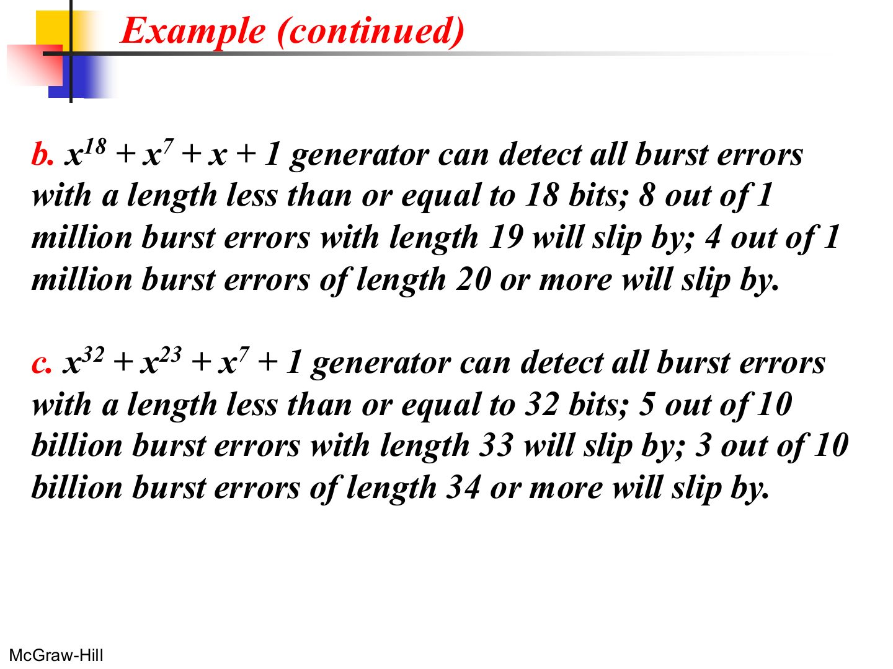
Examples b and c: x¹⁸ + x⁷ + x + 1 (degree 18) catches all bursts up to 18 bits; only about 8 in a million of length 19 and 4 in a million longer than that slip by. x³² + x²³ + x⁷ + 1 (degree 32) catches all bursts up to 32 bits, and only a few in 10 billion longer ones slip by. That is why LANs use CRC-32: on fast links bursts can be long, and degree 32 catches almost everything.
Why do LANs use CRC-32?
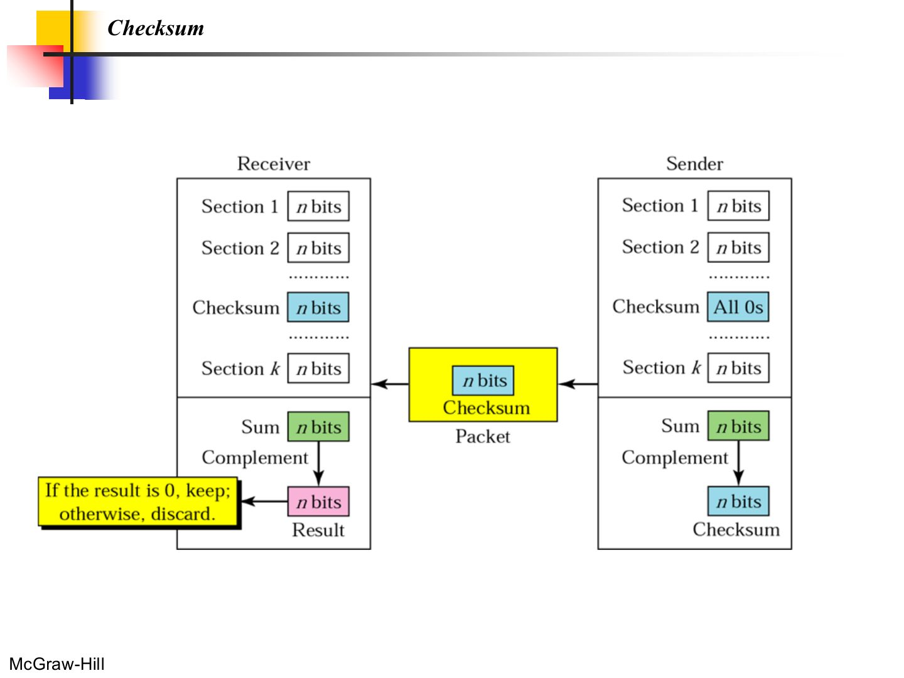
The checksum works with numbers instead of polynomials. The sender divides the data into words (sections), adds them all using one’s complement arithmetic, and complements the sum (flips every bit); the result is the checksum, sent with the data. The receiver adds all the words including the checksum, then complements the result: if it is 0, the data is accepted; otherwise it is rejected. The checksum is used mainly at the transport and network layers (UDP, TCP, IP) rather than by the data link layer.
Seen again Ch 9, slide 20: The UDP and TCP checksum
At the receiver, a checksum check passes when:
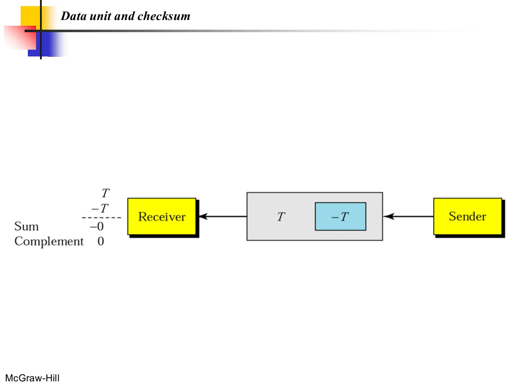
The idea in numbers: the sender sends the data T and the checksum -T (the complement of T). The receiver adds them: T + (-T) = -0, which in one’s complement is all 1s, and complementing that gives 0. Any corruption changes the sum, so the final result isn’t 0.
The sender sends T and its complement -T. What does the receiver get when it adds them and complements?
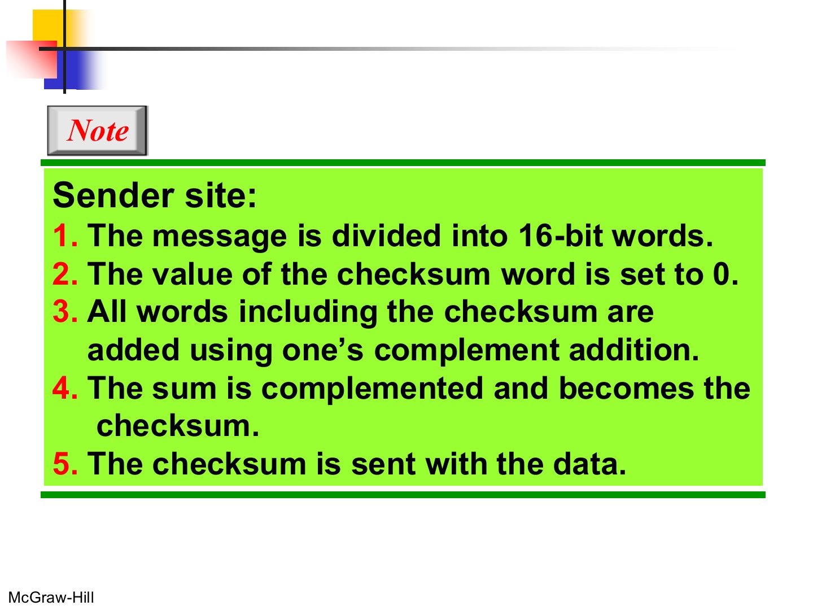
The sender’s steps: (1) divide the message into 16-bit words; (2) set the checksum word to 0; (3) add all the words, including the zero checksum, using one’s complement addition; (4) complement the sum, and that is the checksum; (5) send it with the data. One’s complement addition means: add normally, and if there is a carry out of the leftmost bit, wrap it around and add it to the rightmost bit.
Memory trick One’s complement addition: any carry out of the top bit wraps around and is added back at the bottom.
In one’s complement addition, a carry out of the leftmost bit is:
What value is the checksum field set to before the sender adds the words?
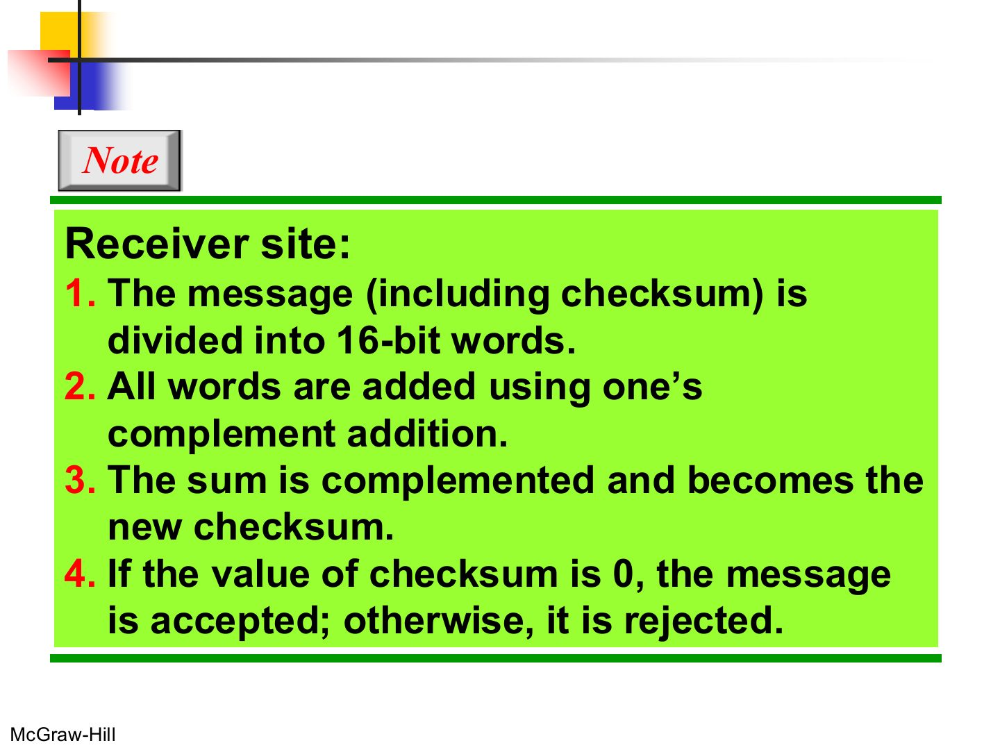
The receiver’s steps: (1) divide the message, including the checksum, into 16-bit words; (2) add them all using one’s complement addition; (3) complement the sum to get a new checksum; (4) if that value is 0, accept the message, otherwise reject it.
The receiver complements the sum and gets 00101101. It:
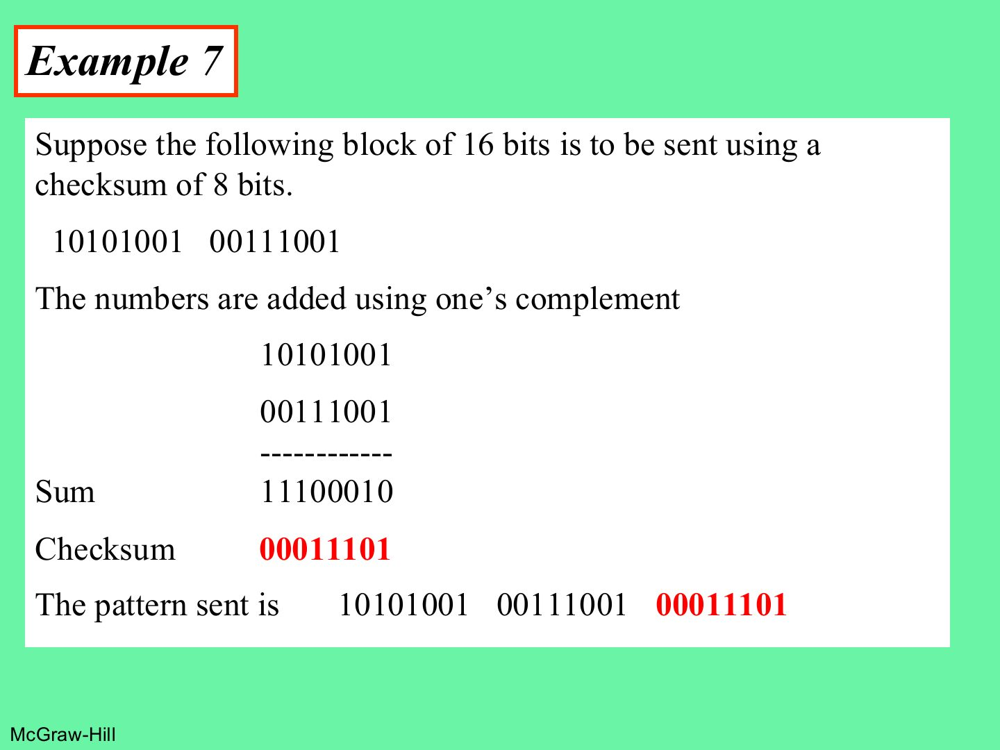
Example with 8-bit words: 10101001 + 00111001 = 11100010 (no carry here). Complement: flip every bit, giving 00011101. The sender transmits 10101001 00111001 00011101. Tutorial 4, Q9: 10101010 + 01010101 + 11110000 + 00001111 = 11111111 (after wrapping the carry), so the checksum is 00000000. Tutorial 4, Q3 (16-bit): 1100110011001100 + 1010101010101010 = 1 0111011101110110; wrap the carry to get 0111011101110111; complement gives the checksum 1000100010001000.
Q9 · 8-bit checksum of four words
Q3 · 16-bit checksum
Four 8-bit words: 10101010, 01010101, 11110000, 00001111. Calculate the 8-bit checksum.
10101010 + 01010101 = 11111111. + 11110000 = 1 11101111 → wrap the carry → 11110000. + 00001111 = 11111111. Complement: checksum = 00000000.
A sender uses the Internet checksum for two 16-bit words, 1100110011001100 and 1010101010101010. Calculate the checksum and show the transmitted packet.
Sum: 1 0111011101110110 → wrap the carry → 0111011101110111. Checksum = complement = 1000100010001000. Packet: 1100110011001100 1010101010101010 1000100010001000.
8-bit words 10101001 and 00111001. The checksum is:
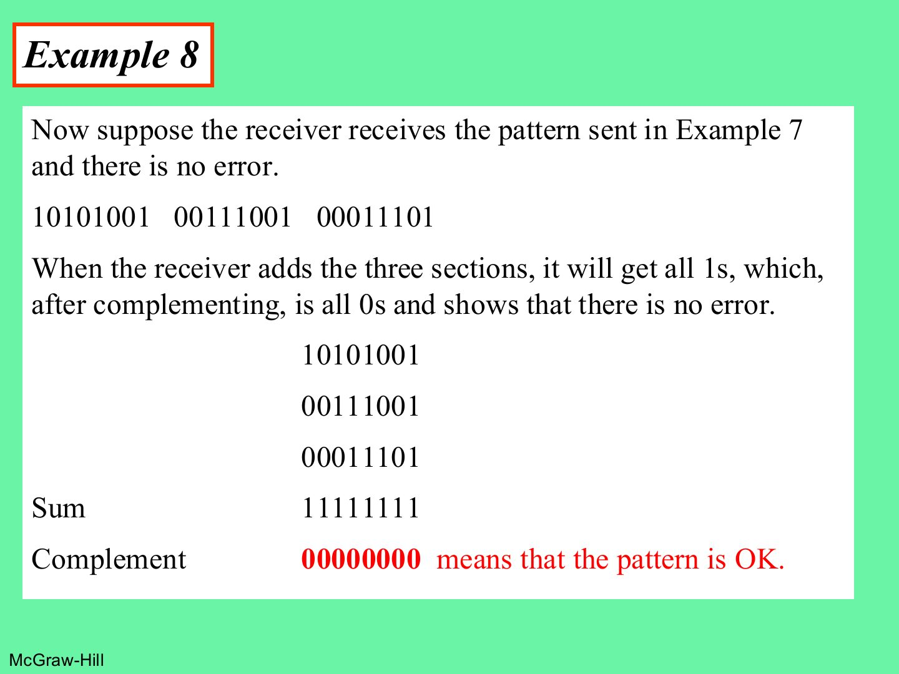
The receiver adds all three sections: 10101001 + 00111001 + 00011101 = 11111111 (all 1s). Complementing gives 00000000, so the pattern is accepted. Tutorial 4, Q3b: with the received checksum 0110010101100101, the sum is 1101110011011100 and its complement is 0010001100100011, which isn’t 0, so an error is detected (the correct checksum was 1000100010001000). Tutorial 4, Q4: 1111000011110000 + 0000111100001111 + 0000000000000000 = all 1s, complement 0, so it is accepted. If the checksum arrived as 1111111111111111 instead, the sum (with the carry wrapped) is still all 1s and the result is still 0, so the receiver would also accept it: in one’s complement, all 0s and all 1s both represent zero.
Q3b · verifying a received checksum
The receiver gets Word1 1100110011001100, Word2 1010101010101010 and Checksum 0110010101100101. Is the packet error-free?
Adding all three with wrap-around gives 1101110011011100; its complement is 0010001100100011, which is not 0, so an error is detected. (The correct checksum was 1000100010001000.)
Word1 1111000011110000, Word2 0000111100001111, Checksum 0000000000000000. (a) Is there an error? (b) What if the checksum arrives as 1111111111111111?
(a) Sum = 1111111111111111; complement = 0 → accepted. (b) Adding 1111111111111111 gives 1 1111111111111110 → wrap → 1111111111111111; complement = 0 → also accepted. In one’s complement both all-0s and all-1s represent zero, so the receiver can’t tell the difference.
Verify the Q9 packet (four 8-bit words with checksum 00000000). Then for Q10c, split 1101 into 11 and 01, calculate a 2-bit checksum and verify it.
Q9: the four words sum to 11111111, plus 00000000 is still 11111111; complement 0 → accepted. Q10c: 11 + 01 = 100 → wrap → 01; checksum = 10. Verify: 11 + 01 + 10 = 110 → wrap → 11; complement 00 → accepted.
With no error, the receiver’s sum of all sections (before complementing) is:
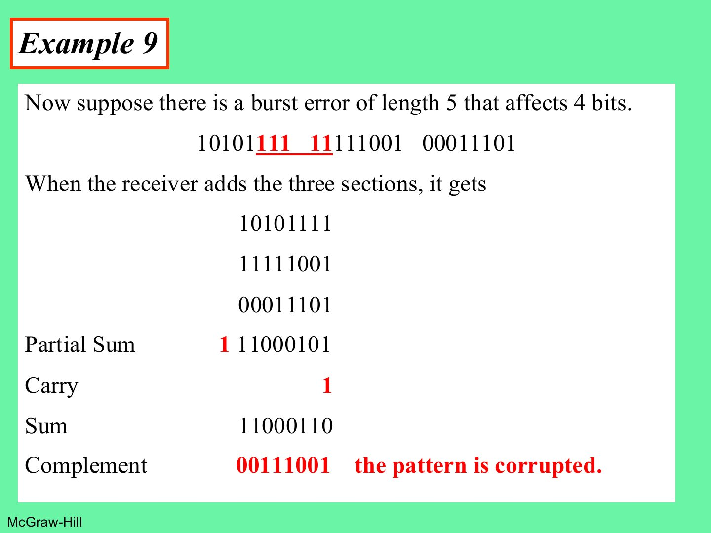
A burst error of length 5 changed 4 bits. The receiver adds 10101111 + 11111001 + 00011101 = 1 11000101; wrapping the carry gives 11000110; complementing gives 00111001, which isn’t 0, so the pattern is corrupted and rejected. The checksum caught the burst.
In Example 9, the receiver’s complemented result is 00111001. This means:
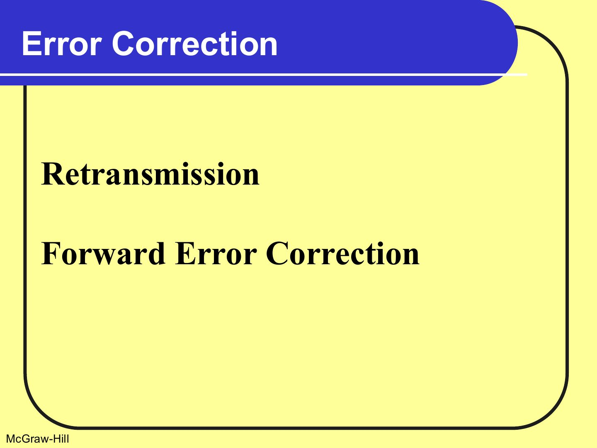
Once an error is detected, there are two ways to fix it. Retransmission: discard the bad data and ask the sender to send it again. Forward error correction (FEC): send enough redundancy that the receiver can repair the error itself, without asking again.
Forward error correction differs from retransmission because:
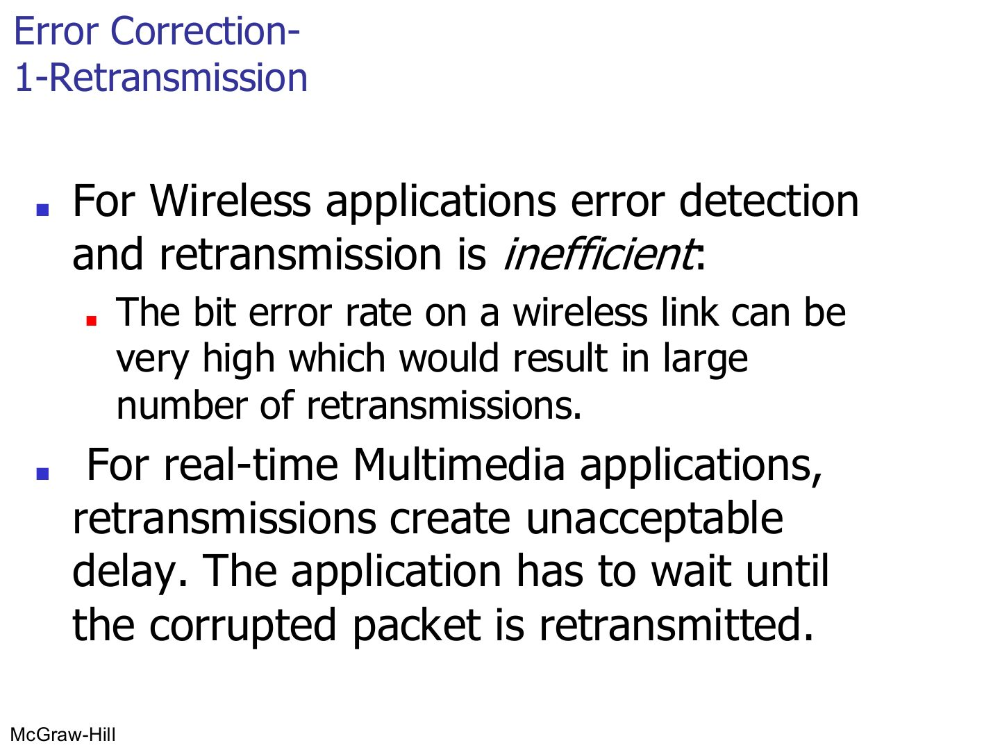
Retransmission doesn’t suit every link. On wireless links the bit error rate can be very high, so a large number of frames would need resending, which is inefficient. And for real-time multimedia (live video, voice calls), waiting for a retransmission causes an unacceptable delay: by the time the replacement arrives, the moment it belonged to has passed. These are the cases where FEC is used instead.
Retransmission is a poor fit for real-time multimedia because:
Why is retransmission inefficient on wireless links?
Forward error correction (FEC) detects and corrects a limited number of errors without retransmission: the receiver fixes the data on its own using the redundant bits.
The XOR method: the sender XORs all the codewords together to make an extra block R = C1 ⊕ C2 ⊕ … ⊕ Cn and sends it with them. If any one block is lost or corrupted, the receiver XORs R with all the other blocks to rebuild it: for example C2 = R ⊕ C1 ⊕ C3 ⊕ C4. This works because anything XORed with itself is 0, so all the other blocks cancel out of R and only the missing one remains. It can only rebuild one missing block per group.
The slide lists three FEC methods: two-dimensional parity (corrects a single-bit error at the crossing), the XOR method above, and chunk interleaving for burst errors (next slides).
Blocks C1..C4 and R = C1 ⊕ C2 ⊕ C3 ⊕ C4 are sent, and C3 is lost. C3 equals:
Forward error correction needs the sender to retransmit corrupted data.
Which is NOT one of the FEC methods on the slide?
Chunk interleaving accepts that something will be lost, and arranges things so the loss is spread thinly. Multimedia can tolerate one small chunk missing from each packet (a tiny glitch in sound or image), but not a whole packet missing. So each packet is split into small chunks, and the chunks are mixed across the transmitted packets.
What loss does chunk interleaving accept in multimedia?
In the figure, five packets of five chunks are written as rows and sent column by column, so each transmitted packet carries one chunk from each original packet. When one transmitted packet is lost in a burst, each of the five original packets loses only one chunk, which the multimedia player can hide, instead of one original packet being lost entirely.
A video stream loses one whole packet in a burst. How does chunk interleaving keep the video watchable?
Each original packet’s chunks were spread over several transmitted packets (sent column by column). Losing one transmitted packet removes just one small chunk from each original packet, a gap small enough for multimedia to hide, instead of losing an entire packet.